Hectare Mini
Operator's Manual
What the Hectare Mini system does
The seeding control system with the Hectare Mini panel in one page — what it watches, what it drives, what it records, and who to ask.
The seeding control system with the Hectare Mini panel is made by Agriwelt GmbH. It watches sowing and fertilizing on seed drills and planters of any make, in real time, and on machines with electric dispenser motors it also drives the metering so that the set rate is applied.
The panel sits in the cab: a 320 × 240 colour screen and seven touch buttons around it — see The panel and its seven buttons. Everything else is on the machine: one sensor per seed line, and whatever the machine needs besides.
Seed
- Shows the seed flow in every seed line, live, as a column on the section diagram.
- Raises an alarm when the flow in a line falls off or stops, with the number of the line.
- Compares the seeding with the target rate the operator sets (the “Hybrid” and “Precise” modes) and raises an alarm when it deviates more than allowed.
- Counts seeds, doubles and skips at every coulter (the “Precise” mode).
- Splits the treated area into the area sown and the area not sown.
Fertilizer
- Shows the flow of dry fertilizer in every line and raises an alarm, by line number, when it falls off or stops.
- Watches liquid fertilizer lines, where the machine has them.
The machine around the seed
- Hopper level, dispenser shaft rotation, fan speed, air pressure at the fan outlet, travel speed — each against its own limits.
- Optional: the shaft speed against the travel speed, and the weight of seed applied by the dispensers.
- Working or transport position of the drill.
- The sensors of a separate fan-drive engine — oil pressure, battery charge, ignition, fuel level, air filter. They are optional and meant for drill combinations with their own diesel engine.
Driving the metering and the tramline
- On machines with electric dispenser motors: applies up to three products to the rate in kg/ha, or the seed to the rate in seeds per metre — see The rate control screen and The Motors screen.
- Makes tramlines with tramline actuators or by stopping motors — see Set up the tramline rhythm.
Speed
The travel speed comes from a wheel or radar sensor, or from the GPS receiver built into the panel. When GPS is set up, it is used while it has a valid fix, and the sensor takes over by itself when it loses the signal — see GPS reception.
Records
Detailed statistics for each field, kept over switch-off — see The Statistics screen.
Contact
Agriwelt GmbH · Hackhofergasse 1 · 1190 Wien, Austria · phone +43 664 156 4910 · info@agriwelt.com · www.agriwelt.com. This is also the address wherever this manual sends you to the technical service.
The panel and its seven buttons
What the Hectare Mini panel consists of, how it is mounted, and what each of the seven buttons does with a short and a long press.
The Hectare Mini panel has a 320 × 240 colour screen and seven buttons on the frame around it. The buttons are touch areas, not mechanical keys: a short touch is a short press; a touch held for about half a second is a long press.

- Power button. Touch-sensitive, at the top edge of the housing.
- Bracket. Lets you mount the panel on a flat surface at any angle, horizontally or vertically. For mounting on a tube, an additional bracket is available.
- The seven buttons. Three on the left, three on the right, one under the screen — see the table below.
- Screen. It also takes touches in some places, for example the digits of the number pad.
- Cable entry. One harness brings the speed sensor, the sensor network and the power supply to the panel.
The seven buttons
| Button | Short press | Long press |
|---|---|---|
| Moves on to the next working screen. In an alarm window: closes the alarm. | On the home screen and the rate control screen: locks or unlocks product application, if the machine has dispenser motors or a liquid fertilizer pump. In an alarm window: closes it and returns to the home screen. | |
| Leaves a menu, a window or a mode, one step back. On the home screen: opens the tramline bout menu, if the tramline is on. | On the home screen, while seeding: sets the alarm level from the flow being applied — see Set the alarm level. | |
| Lowers the selected value. In the sensor setup mode: takes the selected sensor out of control. | — | |
| Opens the menu of the screen, or enters the selected menu item. In the sensor setup mode: opens the context menu of the selected device. | On the home screen, the rate control screen and the Motors screen: switches on the sensor setup mode. | |
| Raises the selected value. In the sensor setup mode: takes the selected sensor into control. | — | |
| Selects the next item, field or device. | — | |
| Selects the previous item, field or device. | — |
If “Buttons sound” is set to “Yes” in the Settings menu, the panel beeps at every touch it accepts.
What every button does on every screen: Buttons on every screen.
Switching on and off
What the Hectare Mini shows after power-on, which screen and access level it starts with, and when it is safe to switch off.
After the power is switched on, a splash screen with the logo appears. It stays until the panel has found every device connected to it — a few seconds — and then the panel changes to its first working screen.
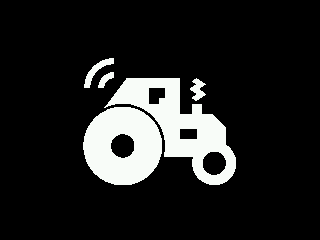
The logo on the splash screen depends on the supplier of the system and may differ from the picture.
What state the panel starts in
- Access level: Operator. After every power-on the panel is at the Operator level, whatever level was set before. Operator is the only level at which alarm windows are shown, so switching off and on is also the quickest way back to safe working. See Access levels.
- The home screen — with one exception: if the rate control screen was open when the panel was switched off, it opens again. It is the only screen the panel remembers.
- Work paused, on a bench. If speed imitation is switched on and the machine has dispenser motors, the panel starts with product application locked — see Lock application by hand.
The version of the software, the serial number of the panel and its hardware identifier can be read at any time: press “MENU” on the home screen and choose the last item of the main menu. “BACK” or “Close” leaves the window.
Switching off
| What | When it is written |
|---|---|
| Settings, target rates, alarm levels | By themselves, about one and a half seconds after the last change and the last touch of a button. |
| Statistics of the active field | Every five minutes, and a few seconds after the machine stops. |
| Readings of the Seeding table | Never — they belong to the working session and start from zero after every power-on. |
Screens, menus, context menus and windows
The things everything on the Hectare Mini is done through — the working screens, the menus, the context menu of a device, the windows that ask or tell, and the access levels.
Everything on the panel happens through the working screens, the menus, the context menu of a device and the windows that ask or tell you something. Numbers are typed on the number pad.
The working screens
“HOME” moves on from one working screen to the next, always in this order:
| Screen | Shown |
|---|---|
| Home screen | Always. |
| Seeding table | Always. |
| Statistics | Always. |
| Motors | Only if the machine has dispenser motors or tramline actuators, and only above the Operator access level. |
| Rate control | Always. One more “HOME” returns to the home screen. |
“BACK” returns to the home screen from the Seeding table, the Statistics and the Motors screen. The rate control screen is left only with “HOME”.

Menus
“MENU” opens the menu of the screen you are on — on the home screen, the main menu.

- Selected item. Black text on a blue band. “UP” and “DOWN” move the band; at the end of the list it jumps to the other end.
- Value between − and +. Shown on the selected item: change it with “PLUS” and “MINUS”, right there in the list.
- Value of an item that is not selected. The − and + appear when you select it.
- Arrow head. The item opens another menu. Press “MENU”.
- Scroll bar. The list is longer than the screen.
| What you see on the right | What it does |
|---|---|
| An arrow head | Opens another menu. Press “MENU”. |
| A value between - and + | “PLUS” and “MINUS” change it one step at a time. |
| A value between -[ and ]+ | “PLUS” and “MINUS” change it one step at a time; “MENU” opens the number pad to type it. |
| Nothing | The item performs an action. Press “MENU”. |
You can also touch an item to select it and touch it again to open it. “BACK” leaves a menu, one level up.
The context menu of a device
Every sensor on the home screen, the rate control screen and the Motors screen has its own menu. Hold “MENU” until one device is shown on a white background — this is the sensor setup mode — then select the device with “UP” and “DOWN” and press “MENU”. How to work in this mode: Take a sensor into or out of control. The items of each context menu are in Sensor settings.

Windows that ask, and windows that tell
A question window has a yellow strip with “Confirmation”. The lines under the question name the two buttons that answer it — they differ from window to window, so read them. The green “Yes” and red “No” on the screen can also be touched. “BACK”, or a touch outside the window, always cancels.

An information window has a blue strip with “Information”. It closes by itself, or with a touch or a button.
Alarm windows

- Red strip. “FAILURE!” — the window reports a fault.
- Hint. “HOME” closes the window.
- The fault. Here the connection to a sensor is lost.
- Type of the sensor. Here the fan.
- Numbers of the sensors. When several sensors of the same type have the same fault, all their numbers are listed.
- “Close”. Touch it to close the window.
While the window is shown, the panel sounds the alarm signal and lights its alarm indicator. “HOME” or a touch of “Close” closes the window; “HOME” held closes it and returns to the home screen. The other buttons do nothing here. All alarms and what to do: How alarms work.
Access levels
| Level | What it opens |
|---|---|
| “Operator” | What you need for work. Active after every power-on. The only level at which alarm windows are shown. |
| “Agronomist” | Hidden items and parameters of the machine and the sensors. Needs a code from the data sheet of your panel. |
| “Service” | The profile and the rest of the commissioning work — for the service only. The configuration of seed and pressure sensors needs only the “Agronomist” level. |
The level is chosen in “Settings” → “User”. How: Enable the Agronomist level. In this manual, a parameter that needs a higher level says so.
The number pad
How to type a number on the Hectare Mini — what the window shows, which buttons work, and the traps of an empty field and of values outside the range.
Some values can be typed as a whole number instead of being stepped with “PLUS” and “MINUS”. In a menu such a value stands between -[ and ]+; press “MENU” on it and the number pad opens. The pad also opens by itself where steps make no sense — for the weight at the end of a motor calibration, for the number of holes in the disk of a dispenser motor, and for an access code.

What the pad shows

- Name of the parameter, in light blue. In some windows the whole prompt, over several lines.
- The number. It opens with the present value (empty if the value is 0) and grows to the left as you type.
- Backspace. A touch deletes the last character; touch and hold deletes the whole number.
- Digits. Touch them — the digits are typed on the screen only.
- .− key. Sets the decimal point. Touch and hold switches the minus sign, where the value may be negative.
- “OK”, in green. Accepts the number and closes the pad.
A touched key does not light up. You see that the touch has arrived by the number, and you hear it if the button sound is on.
Typing a number
On a menu item whose value stands between -[ and ]+, press “MENU”. The pad opens.
Touch and hold the backspace. The old value is cleared.
Touch the digits. Each joins the number on the right.
If the value has tenths, touch .− and type the places after the point.
Check the number, then touch “OK” or press “MENU”. The pad closes and the menu shows the new value.
“BACK” leaves the pad without changing anything. The other buttons and a touch outside the keys do nothing.
Rules of the pad
- The point works only where the value has tenths, for example “Minimum, rpm” and “Maximum, rpm” of a dispenser motor. For whole numbers the .− key does nothing.
- One point per number. A second touch of .− does nothing until you delete the first point.
- The places after the point are limited to what the value knows. Type fewer and the panel adds zeros: with one place, 12 becomes 12.0.
- The length is limited by the width of the field. When it is full, further digits do nothing.
Quick start — before and during the first pass
What to check before you drive into the field with the Hectare Mini, how the panel starts watching by itself, and what to look at during the first pass.
This assumes the system has been commissioned — see Commissioning. Before the season the speed sensor must have been calibrated, and the dispensers too if their shaft speed or the seed weight is to be watched (Speed sensor, Sensor settings).
Before the field
Switch the panel on and wait for the home screen.
Press “HOME” twice to open the Statistics screen. Check that the right active field is selected; on a new field, select an empty one or erase it — Start a new field.
Back on the home screen, set the alarm level of the seed diagram with “PLUS” / “MINUS” — or, in the “Hybrid” and “Precise” modes, the target rate. “DOWN” moves to the fertilizer diagram. See Change the target rate.

The seed diagram with the alarm level in s/s and its control line. If products are applied by weight, set their rates in kg/ha the same way.
Check the settings that change with the work — in the sensor setup mode (Take a sensor into or out of control), each sensor separately: “Period, s” of each dispenser shaft sensor; “Minimum, rpm” and “Maximum, rpm” of each fan; “Minimum, Pa” and “Maximum, Pa” of each pressure sensor; “Fraction” and “Correction” of the seed sensors and of the fertilizer sensors. All seed sensors share one set of settings, all fertilizer sensors another; every other sensor has its own.
Make sure the access level is “Operator”. At a higher level no alarm windows are shown, and the panel warns you with an alarm if you start seeding. Switching off and on returns to Operator.
Seeding
Just start. There is nothing to switch on: the panel starts watching the alarms by itself, with one short beep, once these conditions have held for the “Alarm delay” (3 s by default):
- application is not locked by hand (Lock application by hand);
- with an implement position sensor under control: the drill is in the working position;
- with dispenser motors or a liquid pump: the drill moves, and the speed sensor is under control and shows a speed;
- otherwise: at least “Percent of sowing,%” (20 % by default) of the lines under control are sowing — and, with “Seeding criteria” set at the speed sensor, the drill moves.
When a condition fails, the watching stops at once with three short beeps. There is no separate alarm for a drill that moves while no seed arrives: then the watching does not start and the beep does not come.
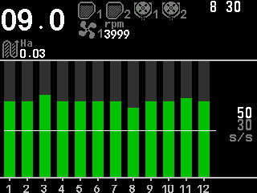
During the first pass, check
- the speed against the tractor's speedometer or a GPS navigator;
- the fan speed and the pressure — within their limits, not red;
- the seed columns above their line, and the seed rate against the target in the “Hybrid” and “Precise” modes;
- the fertilizer columns above their line;
- the product rate in kg/ha against the target;
- no red on any other indicator — Indicators.
If the speed sensor fails, the speed can be imitated in its settings until it is repaired (Speed sensor). When an alarm appears, stop and clear the fault — How alarms work. The quality of the last stretch is on the Seeding table; the result for the whole field on the Statistics screen.
Commissioning — setting up a new system
The order in which a new Hectare Mini system is set up on a machine — from connecting the devices to the calibrations — with a link to the details of every step.
This is the sequence for the dealer or service engineer when the system is installed. Each step links to the topic with the details. Most of the parameters need the Agronomist access level — Enable the Agronomist level.
Connect all devices to the panel and check their power supply according to the wiring diagram in the data sheet of the system.
Check the profile. It must match the equipment of the machine — The profile. If it does not, set it up first.
Check the connections. Every sensor must answer and be under control — see Indicators for the red cross and the not-controlled sign.
Set the general parameters in “Settings” → “Seeding machine parameters” (Settings menu): the working width, “Width, cm”; “Mode of seeding” — “Flow” for a grain drill; “Mode of fertilizers” — “Flow”.
Set the sensors (Sensor settings):
- speed sensor: “Diameter, cm” and “Pulses”; “Imitation, km/h” at “No”; then the speed calibration;
- dispenser shaft sensors: “Period, s”; if wanted, “Rotation speed control” or “Weight control”, each followed by its calibration;
- fans: “Pulses”, “Minimum, rpm”, “Maximum, rpm”;
- pressure sensors: “Filter”, “Minimum, Pa”, “Maximum, Pa”;
- implement position sensor: “Transporting position signal”;
- engine sensors: “Activation signal”;
- seed sensors, and separately fertilizer sensors: at least “Fraction” for the crop.
Set up the tramline, if the machine makes tramlines — after the profile, never before: Set up the tramline rhythm.
On machines with dispenser motors: assign the products and calibrate every motor — Assign a product to a motor, Calibrate a motor by weight.
Each sensor is set separately — except the seed sensors, which share one set of settings, and the fertilizer sensors, which share another.
When everything is set, return to the “Operator” level (switching off and on does it) and go to Quick start.
About this manual and its pictures
How to read this manual — signal words, access levels, button presses — and what in the pictures belongs to the test bench and not to your machine.
How to read this manual
- NOTE — extra information, for example a capability you may not know of.
- IMPORTANT, CAUTION, WARNING — information that costs work, a crop or a part if you ignore it.
- A parameter that is visible only above the “Operator” level says so — see Access levels.
- Press means a short touch of a button; hold means a touch held until the panel reacts, about half a second.
- Labels in quotes, such as “Settings”, are written exactly as the English panel shows them.
The pictures
The screens are real frames from a Hectare Mini panel with firmware 2.2.8, mostly shot on a test bench instead of a machine in the field. Some belong to an earlier firmware; where the layout differs, the text describes 2.2.8. A few things in them belong to the bench:
| What you see in a picture | Why it is there | What your panel shows instead |
|---|---|---|
| A blue hours:minutes in the clock slot, or TRIAL | The bench panel runs on a trial licence. | The time of day — see Clock. |
| Yellow IMITAT in the clock slot | The bench runs in an imitation mode. | The time of day. |
| A yellow speed figure, or IMITATION | The speed is imitated — no wheel turns on a bench. | The measured speed in white. |
| Red hoppers, red dispenser shafts, a red fan with XXXX | The bench has no product, no shafts turning and no fan connected. | Grey indicators while everything is in order. |
| Zeros on the Statistics screen and the Seeding table | The bench was standing still. | Your figures. |
Where an English picture is still missing, the page shows "Picture to follow"; the text says everything the picture would show. The German pages show the German frame in its place.
The home screen
What every part of the Hectare Mini home screen is — speed, indicators, area, population, the diagrams and rate fields — and what you can do from it.
The home screen is the main working screen. It shows the state of every device of the machine and, below, one diagram for the seed and one for the fertilizer. What it shows follows the profile: every device entered there gets its indicator. When space runs short, the panel makes the speed figure or the diagrams smaller, and on a crowded screen it leaves out the area or the population indicator.
A planter with seed and fertilizer

- Travel speed, in km/h. Messages about the speed replace the figure. Speed
- Hoppers, numbered. Red — empty. Hopper
- Dispenser shafts. Grey — in order; the icon turns while the shaft turns. Dispenser shaft
- Clock. The time of day; it also carries messages. Clock
- Markers. Yellow — both marker arms are up. Markers
- Fan and its speed in rpm. Fan
- Area treated on the active field, in ha. Area
- Population — the seeding density in thousands of seeds per hectare, in the “Precise” mode. Population
- Seed diagram. One column per seed sensor. The section diagram
- Scale of skips and doubles, in per cent (“Precise” mode).
- Seed rate field. Measured rate on top, target below, here in seeds per metre. Change the target rate
- Section numbers.
- Fertilizer diagram, here in the “Flow” mode, with its control line.
- Fertilizer rate field. Measured flow on top, alarm level below, in fertilizer units per second.
A grain drill on the bench

- Travel speed.
- Hoppers. Red outline — empty.
- Dispenser shafts. Red — alarm: the shaft does not turn.
- Clock.
- Fan. Red with XXXX — no connection to the fan sensor.
- Area.
- GPS reception. The satellite icon and the number of satellites used. GPS reception
- Seed column. Dark grey — no flow, the drill stands.
- Control line. The alarm level drawn across the diagram.
- Rate field. Measured flow on top, alarm level below, in seeds per second.
- Section numbers.
All indicators and their states: Indicators. The diagram — columns, lines, colours: The section diagram.
Two modes
The home screen works in two modes:
- Monitoring mode — after switch-on. You watch the work and change the rates.
- Sensor setup mode — hold “MENU”. One device is shown on a white background; “UP” and “DOWN” move to the next device, “PLUS” and “MINUS” take it into or out of control, “MENU” opens its context menu. “BACK” leaves the mode. See Take a sensor into or out of control.

What you can do from the home screen
| To do this | Do this |
|---|---|
| Open the main menu | “MENU” |
| Change a target rate or alarm level | “PLUS” / “MINUS”; “UP” / “DOWN” choose the field — Change the target rate |
| Let the panel set the alarm level | Hold “BACK” while seeding — Set the alarm level |
| Lock or unlock product application | Hold “HOME” — Lock application by hand |
| Open the tramline bout menu | “BACK” — Next tramline bout |
| Open the settings of a device | Hold “MENU”, select it, “MENU” |
| Go to the next working screen | “HOME” — Screens, menus and windows |
Indicators of the home screen and their states
Every indicator of the Hectare Mini home screen in every state — speed, hopper, dispenser shaft, fan, pressure, engine sensors, implement position, markers, tramline, clock, area, population and product rates.
Read the indicators by colour. On firmware 2.2.8 a device in order is drawn in grey; red, mostly blinking, is an alarm; yellow is a state you should know about but not a fault. Three states are the same for every sensor:
| What you see | Meaning | What to do |
|---|---|---|
| No connection to the sensor. | Check its cable and connectors. | |
| A red question mark, blinking, or ???? in place of the value | A device of another type answers at this place. | Have the configuration checked by the service. |
| A grey not-controlled sign, blinking, or !!!! in place of the value | The sensor is taken out of control. It is not watched. | Take it back into control when the fault is repaired. |
Speed
| What you see | Meaning |
|---|---|
| The travel speed in km/h. | |
| Faster than allowed. The red figure alternates with “SLOWER”. | |
| Slower than allowed. The red figure alternates with “FASTER”. | |
| Red figure alternating with “Sensor” 1 or 2, or with “Settings” | One of the two wheel sensors has failed, or the speed limits are set wrongly. |
| No connection to the speed sensor. | |
| Speed imitation is on: the figure is yellow and alternates with “IMITATION”. Outside the limits, with INCREASE IMITATION or DECREASE IMITATION. |
The speed is watched against its limits only if that control is switched on in the speed sensor settings. Where the speed comes from GPS: GPS reception.
Hopper
| What you see | Meaning |
|---|---|
| Grey | Product above the sensor. |
| The hopper is empty. |
Dispenser shaft
| What you see | Meaning |
|---|---|
| Grey; turning while the shaft turns | In order. |
| The shaft does not turn, or not at the speed required. |
Fan
| What you see | Meaning |
|---|---|
| Grey, with the speed in rpm | In order. |
| Red, blinking, with the speed | The fan speed is outside its limits. |
Pressure
| What you see | Meaning |
|---|---|
| Grey, with the pressure in kPa | In order. |
| The pressure at the fan outlet is outside its limits. |
Engine sensors
The sensors of a separate fan-drive engine. Oil pressure and battery charge are watched only while the ignition is on.
| What you see | Meaning |
|---|---|
| Low oil pressure. | |
| The battery is not charging. | |
| Little fuel in the tank. | |
| The air filter is clogged. | |
| Key grey / |
Ignition on / ignition off. |
In order, each of these icons is grey.
Implement position
| What you see | Meaning |
|---|---|
| Grey | The drill is in the working position. |
| The drill is in the transport position. |
Markers
Grey arms show which marker is down and which is up. With two marker sensors, both arms yellow means both markers are up.
Tramline bout
Wheel tracks with the current bout on top and the number of bouts below — see Next tramline bout.
Clock
| What you see | Meaning |
|---|---|
| White time | The time of day. |
| Red time, with a red BAT for a moment every four seconds | The clock battery must be replaced. |
| Red XX:XX, blinking | The clock is faulty. |
| Yellow IMITAT | The panel runs in an imitation mode — see About the pictures. |
| Blue hours:minutes and TRIAL | A trial period is active: the time left. It appears every 30 seconds and covers the hopper and shaft icons for a moment. |
Area
Hectares treated on the active field — shown only with a speed sensor, and only where the screen has room.
Population
In the “Precise” mode: thousands of seeds per hectare, averaged over the seed sensors under control that answer. If seed and fertilizer are both in “Precise”, two indicators show, marked A (seed) and B (fertilizer); the area is then usually not shown.
Product rate
One indicator per product applied by weight, with the product number, in kg/ha. Red and blinking: the rate deviates more than “Product rate error,%”. While it is within the tolerance, the panel shows the target figure.
The column on the right
| What you see | Meaning |
|---|---|
| Motor symbol, yellow, blinking | Product application is locked by hand — see Lock application by hand. |
| Actuator symbol, red, blinking | A dispenser motor or a tramline actuator is in alarm — see the Motors screen. |
| Actuator symbol alternating with the not-controlled sign | A motor or an actuator is taken out of control. |
| Product symbol, red, blinking | The set rates cannot be applied at any speed — see Calibrate a motor by weight. |
The section diagram — columns, lines and colours
How to read the seed and fertilizer diagrams of the Hectare Mini in the "Flow", "Hybrid" and "Precise" modes, and what "NOT UNDER CONTROL" means.
Each column of a diagram is one seed or fertilizer line — one sensor. Its height is the flow through that line now. Next to the columns, the rate field shows the measured rate on top and the set value below it; while you change the set value it turns yellow for a few seconds. How the rest is drawn depends on the mode set in “Mode of seeding” and “Mode of fertilizers”: “Flow”, “Hybrid” or “Precise”. The fertilizer diagram always stands above the seed diagram and is usually run in “Flow”.
“Flow” mode
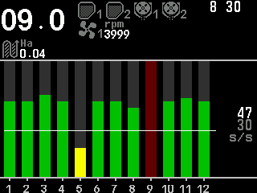
- Alarm level — the lower figure of the rate field, in seeds per second (s/s). The flow under which a line counts as failing. “PLUS” and “MINUS” change it by 1.
- Control line — the white line across the diagram: the alarm level drawn.
- Measured flow — the upper figure: the average of the lines now.
- Green column — the flow is above the alarm level.
- Yellow column — the flow is below the alarm level: alarm.
- No column — no flow at all. While the drill is seeding and the alarms are watched, the background of that column blinks dark red over its full height.
“Hybrid” mode
As “Flow”, with three differences: the set value is a target rate in seeds per metre (s/m), changed by 1; lines for the permitted deviation can be drawn above and below it; and skips and doubles are not counted.
“Precise” mode
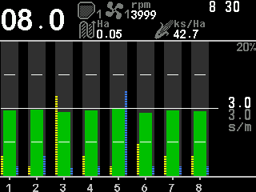
- Target rate — the lower figure of the rate field, in seeds per metre (s/m), changed by 0.1. While you change it, the panel also shows it as a population in ks/Ha and as the spacing between seeds in centimetres.
- Measured rate — the upper figure, averaged over the lines that have flow now.
- Rate line and the upper and lower deviation lines. Which of them are drawn is set by “Grid”: the rate line with “No” or “Full”, the deviation lines with “Partial” or “Full” (Seeding diagram settings). The permitted deviation is “Rate error,%” of the seed sensors.
- Green column — within the deviation; blue — above it; yellow — below it.
- Yellow hatched bar left of a column — the skips in that line; blue hatched bar right of it — the doubles. Their height is measured against “Scale S&D,%”, shown at the top of the rate field while “Skips & Doubles” is “Yes”. On machines with many rows the columns are too narrow and the bars are not drawn.
Skips, doubles and the quality are counted over the recalculation interval — the stretch of path set by “Recalculation,m” of the seed sensors.
Marks on a column — all modes
| Mark | Meaning |
|---|---|
| White box with ! | The sensor is taken out of control. |
| Red cross | No connection to the sensor. |
| Grey background, white number | The sensor selected in the sensor setup mode. |
| Light grey hatching | The line is shut off for a tramline — see Next tramline bout. |
“NOT UNDER CONTROL”
The panel starts watching the seeding alarms only when the drill is really seeding: when at least the share of lines set by “Percent of sowing,%” (20 % by default) sows within the set value — and, if “Seeding criteria” is set in the speed sensor, while the drill moves. Seed and fertilizer alarms start and stop together. One short beep says the watching has started; three short beeps, that it has stopped.
If the drill is seeding but the flow stays under the set value, the diagram shows “NOT UNDER CONTROL”. Either the flow has fallen during work — a real fault — or the alarm level or target rate is set higher than the machine delivers.
GPS reception and the GPS information screen
How the Hectare Mini takes the travel speed from its built-in GPS receiver, what the colour of the satellite icon means, and how to read the GPS information screen.
The panel has a GPS receiver built in. It gives the travel speed where the drill has no wheel or radar sensor, or alongside one. While the receiver answers and has a valid fix, the speed comes from GPS. If it falls silent or loses the signal, the sensor set under “Speed” in the profile takes over by itself — you do not have to switch anything.
The receiver is switched on by the profile item GPS: UBX for the built-in receiver (the normal setting) or NMEA; “No” switches it off and hides the satellite icon.
The satellite icon
The icon stands at the right edge of the home screen, with the number of satellites used in its lower right corner.
| Colour | Meaning |
|---|---|
| Red | The receiver does not answer, or it answers without a valid fix — normal indoors and just after switch-on. The number is not shown while the receiver is silent. |
| Grey | Valid fix, fewer than 5 satellites. |
| Yellow | Valid fix, 5 to 7 satellites. |
| Grey | Valid fix, 8 satellites or more. The two grey states differ only by the number. |
The information screen
To open it, hold “MENU” on the home screen, select the satellite icon with “UP” / “DOWN” and press “MENU”.

- “GPS signal:” “Yes” if the receiver answers, otherwise “No”.
- Satellites — the number seen and the number used in the fix.
- Speed — the speed as the seeding uses it. Below a small standstill threshold it shows 0 km/h, so that a drill standing still does not count area.
- raw — the unfiltered speed, and whether the fix is valid.
- UTC — date and time from the receiver; zeros before the first valid fix.
- Reception counters. With NMEA: bytes received, valid sentences, checksum errors and the baud rate found; with UBX: bytes, frames and errors.
- ring drop — bytes lost in the receive buffer. A rising figure means the connection to the receiver is disturbed.
- BACK leaves the screen.
The screen only shows; nothing on it can be changed, and no access code is needed.
The Seeding table screen
The readings of every seed line as figures, one row per line — which tables your machine has, what each column and colour means, and how to zero the readings.
The Seeding table answers what the diagram on the home screen cannot: which line exactly, and by how much. Open it with “HOME” from the home screen; the next “HOME” goes on to the Statistics screen, “BACK” returns to the home screen.
The figures belong to the working session: they count from switch-on and are lost at switch-off. The field statistics are kept apart — see The Statistics screen.
What the table shows
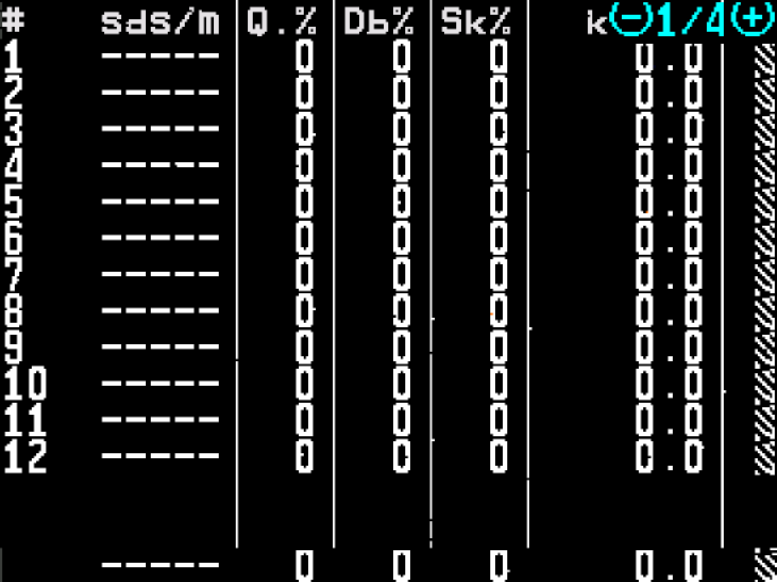
- Row number — the seed line, in the order of the rows of the machine.
- sds/m — the rate measured now, in seeds per metre. ----- — the line is watched but not sowing.
- Q.% — quality: the share of seeds placed singly, as intended.
- Db% — doubles: two seeds where one was intended.
- Sk% — skips: a gap where a seed was intended.
- Page indicator — this table and the number of tables, between the signs of “MINUS” and “PLUS”, the buttons that change the table. Absent if there is only one table.
- Population of the line, in thousands of seeds per hectare.
- Averages over all lines watched. With two groups of sensors, two such lines, A and B.
Columns 3 to 7 belong to the last completed recalculation interval — the stretch set by “Recalculation,m” (or “Recalculation,sec” without a speed sensor), shown at the bottom right. Only column 2 is a live reading. After the machine stops, the figures of the last interval stay on the screen to be read at leisure. A further column, %, gives the deviation of each line from the target, with its sign; positive means more seeds and a closer spacing.
Which tables your machine has
| Table | Shown when |
|---|---|
| Rate per area (population, ks/Ha), Rate per distance (seeds per metre) | Seed in the “Precise” mode. |
| Seed counters | Always. |
| Dry fertilizer | There are fertilizer sensors and their mode is not “Precise”. |
| Liquid fertilizer | There are liquid fertilizer sensors. |
A planter with seed in “Precise” and dry-fertilizer sensors has four tables. “PLUS” goes to the next one, “MINUS” to the previous one; the page indicator at the top right shows which one you are on.


If seed and fertilizer are both in “Precise”, the fertilizer lines appear in the seed tables as group B, in light yellow type.

On the Seed counters table the bar runs between the permitted deviation “Rate error,%” either side of the target — not a fixed scale. In the “Flow” and “Hybrid” modes the scale is fixed at −50 % to +50 %. The left column then shows seeds per second instead of seeds per metre.
Markers and colours
| In the rate column | Meaning |
|---|---|
| ----- | Watched, not sowing now. |
| ! ---, whole row grey | Taken out of control. |
| X ---, whole row dark red | No connection to this sensor. |
| ? ---, whole row dark red | A sensor of the wrong type answers here. |
While sowing, a cell turns yellow when it reaches more than half the permitted deviation and red when it exceeds it. The limits are “Rate error,%”, “Doubles error,%” and “Skips error,%” of the seed sensors; with the doubles or skips check off, “Scale S&D,%” is used. The row number turns yellow or red with its worst cell, so the line that stands out is found at a glance.
Buttons
| Button | What it does |
|---|---|
| “PLUS” / “MINUS” | Next / previous table. |
| “DOWN” / “UP” | Scroll one row. One touch is one row. |
| “MENU” | Asks “Zero readings?” — Zero the readings. |
| “HOME” | Statistics. |
| “BACK” | Home screen. |
The table itself does not react to touch.
Fertilizer tables and tramline rows

The Dry fertilizer table is built like the Seed counters table, with fert/m in the “Hybrid” mode or fert/s in “Flow”; the piece count is shown only with “Count seeds always” on. The Liquid fertilizer table shows per line the flow and the litres applied, with L/Ha or L/min by “Mode of liq.fert.”, and has no deviation bar.
A line shut off for a tramline shows only its number and flow; the other columns are dashed. Here yellow and red warn that more seed falls into the tramline than “Toler.sowing to tramline,%” allows.

The Statistics screen
The report of the work on each field, block by block — and the menu that chooses the active field, shows the lifetime mileage and erases a field.
The Statistics screen is the report of the work: how far you drove, how much you covered, what was sown and how evenly. It is kept separately for each field and survives switching off. Open it with “HOME” from the Seeding table (twice from the home screen); “BACK” returns to the home screen, “HOME” goes on to the next working screen.
The report is one long list. “UP” and “DOWN” scroll it one line per touch; “PLUS” and “MINUS” show the next or previous field. On the screen itself, a swipe up or down scrolls, a two-finger swipe changes the field and a two-finger tap opens the menu.
The head and the work on the field
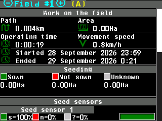
- Field number, between the signs of “MINUS” and “PLUS”.
- (A) — this is the active field, the one the panel writes to now.
- Path — distance driven while seeding, in km.
- Area — area treated while seeding, in ha.
- Operating time — time spent seeding.
- Movement speed — the average speed while seeding.
- Started / Ended — when the work on this field began and ended.
- Seeding — the area sown, not sown and unknown.
- Seed sensors — one block per sensor follows.
- s, n, ? — the share of sown, not sown and unknown area for this sensor.
- Bar — the same shares in colour: green sown, red not sown, grey unknown.
- Scroll bar — where you are in the report.
Unknown is area driven while a sensor had no connection or was out of control. In the “Flow” mode, not sown is the area where the sensor saw no flow; in “Precise” it is the area of one skip times the number of skips.
Blocks you may also see
| Block | What it holds |
|---|---|
| Products by weight | Per product: the weight applied, actual against target in kg/ha and in per cent, and the distance, share and number of deviations beyond “Product rate error,%”. |
| “Work without alarms control” | Path, area and share, time and speed driven while seeding without the alarms watched — a set value too high, or set high on purpose. |
| “Speed control” | “Path, slow” and “Path, fast”: distance and share driven outside the speed limits. Only with the speed control on. |
| “Fertilizing” | Fertilized, not fertilized and unknown area. |
| Per seed sensor, in the full view | The distance, share and number of times the line ran under the alarm level. |
In the “Precise” mode

The “Seeding” block adds “Seeds sown (x1000)”; “Quality” (singles), “Doubles” and “Skips” while seeding, and “Not sown” — skips over stretches where nothing was sown — each as a share of all seeds and skips; and “Population,ks/Ha” and “Rate, s/m”, each in the columns “Factical” and “Setuped”, with the ratio in per cent. Each seed sensor adds its seeds, its quality, doubles and skips, its population and rate, and the distances it ran below and above the permitted deviation. “Seeds sown (x1000)” also appears in the other modes with “Count seeds always” on.
The actual rate counts only the path where seed flowed; the population counts the whole path. Their deviations can therefore differ.
The menu of the screen
Press “MENU”.
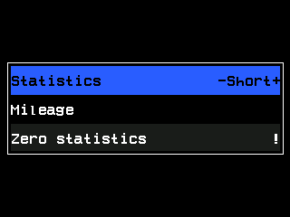
| Item | What it does |
|---|---|
| “Select field” | Makes the field shown the active one — see Start a new field. Shown only on a field that is not active. |
| “Statistics” | “Short” or “Full” view. Not shown without a speed sensor. |
| “Mileage” | Path and area over the whole life of the system; they cannot be reset. Without a speed sensor, the running time. |
| “Save to SD-card” | Shown when a memory card is ready. Firmware 2.2.8 does not save the report yet and answers with a failure message. |
| “Zero statistics” | Erases the field shown. At the Operator level the panel asks for the code of a higher level; above it, “Are you sure?”. |
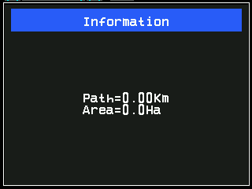
The rate control screen
The screen for machines that apply products to a rate — what it shows, its three states, its colours, and how to reach the motors and their calibration from it.
On the rate control screen you set the target rates of seed, dry fertilizer, liquid fertilizer and the products applied by weight, and watch the rate actually applied. It also shows the area, the speed, the hoppers, the fans and the implement position. It is the last working screen: “HOME” from the Statistics screen (or the Motors screen) brings you here, and one more “HOME” returns to the home screen. “BACK” does not leave this screen.
It is the only screen the panel remembers over switch-off: if it was open, it opens again after the next switch-on.
What the screen shows

- Area worked on the active field, in ha. Only with a speed sensor.
- Travel speed, in km/h, with the same messages as on the home screen — see Speed. Only with a speed sensor.
- Settings symbol. Touch and hold it to open the main menu.
- Product indicator — here product 1, in kg/ha. One for every product that has at least one metering unit under control applying it by weight.
- Rate. The rate actually applied; while the indicator is selected, the target.
- Work pause — the hand. Dark grey: working; blinking yellow: application locked — see Lock application by hand.
- Hopper, one for every hopper.
Depending on the machine, more indicators appear: the target rate of liquid fertilizer in L/ha, the rate of seed and of dry fertilizer in the “Precise” mode, a fan indicator for every fan, and the implement position at the bottom right. If there is no room for all fans and hoppers, the panel drops first a fan, then hoppers; the home screen still shows them all.
Three states
- Observation — nothing is selected. The indicators show the rates actually applied.
- Rate change — “PLUS” or “MINUS”. The rate indicators can be selected; see Change the target rate.
- Sensor setup — hold “MENU”. The settings symbol, the speed, the fans, the hoppers and the implement position can be selected; “PLUS” and “MINUS” take the selected sensor into or out of control, “MENU” opens its context menu — or, on the settings symbol, the main menu.
In both modes “UP” and “DOWN” move the selection, “BACK” leaves the mode, and “HOME” held locks or unlocks application.
Colours of a rate indicator
| What you see | Meaning |
|---|---|
| Symbol and unit green, value white | In order; the value is the rate applied. |
| Symbol, unit and value blinking red | The rate applied deviates from the target more than allowed. |
| Dark blue-green background, light blue symbol, yellow value | Selected; the value is the target. |
| !!!!, XXXX or ???? blinking red (liquid fertilizer only) | Not under control / no connection / a device of the wrong type. |
In the “Precise” mode the seed and fertilizer indicators show the population in ks/Ha while not selected, and the target in s/m while selected.
The rate of a product is averaged over each 10 m of travel. It counts as deviating when it is off by more than “Product rate error,%”: the alarm comes after two such stretches in a row and clears after two good stretches. Standing still, with application locked, or with no metering unit under control, the indicator shows 0.00 and the alarm is cleared.
To the motors and their calibration
Touch and hold a product indicator — or select it in the rate change state and press “MENU”. A list of the motors of that product opens (“Motor” or “Fert.mot.” with the number). Select a motor and press “MENU”: “Calibration, product”, “Weight, gr” and “Rotations”. How to calibrate: Calibrate a motor by weight.
The list exists only for products whose motors work in “Flow” or “Hybrid”. If the machine is moving, the panel refuses: the speed must be zero for a calibration. A touch and hold on the liquid fertilizer indicator opens the context menu of the pump.
The Motors screen
One tile per dispenser motor and one symbol per tramline actuator — how to reach the screen, read the colours, take a motor out of control and open its settings.
The Motors screen shows the dispenser electric motors of the machine, one tile each, and the tramline actuators. It is the screen to look at when a row stops sowing and you want to know whether the motor is the reason. It has no heading: it carries only numbered motor and actuator symbols — no rates, no area, no speed.
It exists if the profile holds at least one seed motor, one fertilizer motor or one tramline actuator, and it is shown only above the Operator level — enable the Agronomist level first (Enable the Agronomist level). Then it follows the Statistics screen: three presses of “HOME” from the home screen. “HOME” goes on to the rate control screen; “BACK” returns to the home screen.

The seed motors stand in a bar at the top, numbered in the order of the profile. Below it a bar of fertilizer motors, if the machine has them — on a machine with more than twenty rows and no fertilizer motors, the second bar holds the second half of the seed motors. The tramline actuators stand below the bars. Beside each motor: the speed of the driven shaft in rpm; on machines with many motors it is left out so that all tiles fit.
Reading a motor tile
The colour of the symbol is the state. Symbol and sign alternate once a second while the state is not normal.
| Symbol | Value | State |
|---|---|---|
| Motor, green | the speed | Under control and driven. |
| Motor and STOP, yellow | the speed | In order, but application is off — at the headland, or locked by hand. Not a fault. |
| Motor, red | the speed | Alarm. The alarm window names the reason. |
| Motor and cross, red | XXX | No connection to the motor controller. Check its power supply and its cable and connectors. |
| Motor and ?, red | ??? | The device answering is not a motor controller, or the controller stayed in its update mode. |
| Motor struck through | !!! | Taken out of control: neither driven nor watched. |

Reading a tramline actuator
| Symbol | State |
|---|---|
| Pulled in or pulled out, grey, steady | It has reached that position. |
| Pulled in or pulled out, yellow, steady | It is moving there. |
| Pulled in and pulled out alternating, yellow | The position is not certain. |
| Red cross, blinking | No connection. |
| Red question mark, blinking | The device answering is not a tramline actuator. |
| Actuator symbol, red, blinking | The actuator reports an alarm. |
| Struck through, grey, blinking | Taken out of control. |
The position reached is grey, not green: only motors are green here.
Selecting a motor
Hold “MENU” to switch on the selection; it stands on the first motor, on a white background. “UP” and “DOWN” move through a bar and on into the next bar and the actuators. Then:
- “MENU” opens the context menu of the selected motor or actuator — Motor context menu.
- “MINUS” / “PLUS” take it out of or into control — Take a sensor into or out of control.
- “BACK” leaves the selection; a second “BACK” returns to the home screen.

The service screen of the motors
The context menu item “Electric motors” (Service level) opens a screen for the service engineer: versions, motor type, target and actual speed, error code, voltages, temperature, current and sixteen state signs in the “Registers” view, and counters per field in the “Statistics” view. You do not need it for sowing.
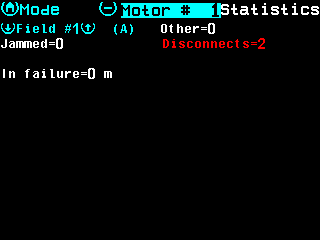
- Mode — “HOME” switches between the views.
- Motor number — “MINUS” and “PLUS” switch the motor.
- Name of the view.
- Field number — “UP” and “DOWN” switch it; (A) marks the active field.
- Counters — “Jammed”, “Disconnects” and “Other”. Above zero, red.
- In failure — distance driven with the motor in failure.
“BACK” leaves the screen. If the number belongs to no motor of the profile, “No data” appears.
Change the target rate or the alarm level
Raise or lower the alarm level, the target rate in seeds per metre or the product rate in kg/ha — on the home screen or on the rate control screen.
Every diagram and every product applied by weight has a rate field: the measured value on top, the set value below. What the set value is depends on the mode — see The section diagram:
| Mode | The set value | One step |
|---|---|---|
| “Flow” | Alarm level, seeds per second | 1 s/s |
| “Hybrid” | Target rate, seeds per metre | 1 s/m |
| “Precise” | Target rate, seeds per metre | 0.1 s/m (0.5 to 50.0) |
| Product by weight | Target rate, kg/ha | 0.1 kg/ha up to 50.0, above that 1 kg/ha (1.0 to 999.0) |
| Liquid fertilizer | Target rate, L/ha | 0.1 L/ha up to 50.0, above that 1 L/ha |
On the home screen
Press “PLUS” or “MINUS” once. The rate field used last is selected and blinks; nothing has changed yet.
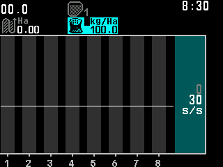
Changing the target rate of a product in kg/ha on the home screen. If the machine has more than one rate field — seed and fertilizer, products by weight — press “DOWN” or “UP” to move to the next or the previous one.
Press “PLUS” to raise the value or “MINUS” to lower it, one step per touch. Holding the button does not repeat it.
Press “BACK” to finish, or simply wait: five seconds after the last touch the field stops blinking. The new value is in force.
In the “Precise” mode the panel also shows, while you change the target, the same rate as a population in ks/Ha and as the spacing between seeds in centimetres.
On the rate control screen
Press “PLUS” or “MINUS”. The target selected last is highlighted — dark blue-green background, yellow value; after switch-on, “Product 1”. The first press changes nothing.
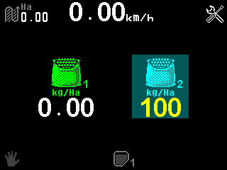
The rate control screen with Product 2 selected for a change. Move to the target you need with “UP” and “DOWN”.
Set the value with “PLUS” and “MINUS”.
Press “BACK”. The highlight goes; the indicators show the applied rates again.
Coming down from above 50.0, a product or liquid rate stops exactly at 50.0; the next touch takes it below, in steps of 0.1. The seed target in the “Precise” mode is one number for all seed sensors: the home screen and the rate control screen change the same value, and there is no menu item for it.
The value is stored by itself about one and a half seconds after the last change; wait that long before switching off.
Set the alarm level of a grain drill
Let the Hectare Mini set the alarm level from the flow being applied, with one long press — or set it by hand — so that a line that loses flow is reported.
In the “Flow” mode the panel watches every line against an alarm level in seeds per second: a line whose flow drops below it is reported. Set too high, the columns sink under the line and the diagram shows “NOT UNDER CONTROL”; set too low, a partly blocked line goes unnoticed. The simplest way is to let the panel set it from the flow it sees.
Let the panel set it
Start seeding as usual, at working speed, and wait until the panel gives one short beep — it is now watching the seeding.
On the home screen, hold “BACK”. The panel gives one short beep.
Look at the rate fields. In the “Flow” mode each alarm level is now half the flow measured at that moment; in the “Hybrid” mode the target rate is set to the rate measured at that moment. The changed field is highlighted.
This works for the seed diagram, the fertilizer diagram and liquid fertilizer in “Flow”, all at once, but only while the panel watches the seeding. Standing still, or in the “Precise” mode, the long press does nothing.
Set it by hand
Press “PLUS” or “MINUS” on the home screen: the first press selects the seed rate field, further presses change it by 1 s/s. “DOWN” and “UP” move to the fertilizer rate field. Details: Change the target rate.
Lock product application by hand
Stop the dispenser motors and the liquid pump with one long press, so that nothing turns while you work on the machine — and how the panel shows the lock.
On a machine with dispenser electric motors, fertilizer motors or a liquid fertilizer pump, you can lock product application by hand. While it is locked, no dispenser motor turns, the pump stands still, and the panel expects no application: alarms about a rate that is too low do not occur. Use it whenever you work on the metering units, or to cross a field without sowing.
On the home screen or on the rate control screen, hold “HOME” until the panel gives one short beep.
Check the lock. On the home screen a yellow motor symbol blinks in the column at the right; on the rate control screen the hand at the bottom left turns yellow.
The work pause hand: dark grey while working, yellow while locked. To release the lock, hold “HOME” again. One short beep; the symbol stops blinking and application resumes.
On every other machine the long press does nothing and the hand stays dark grey.
On the Motors screen a locked motor shows a yellow STOP — see The Motors screen. > NOTE > > On a bench with speed imitation and dispenser motors, the panel starts with application locked and the imitated speed stays at 0. Only releasing the lock with “HOME” starts the imitated travel.
Take a sensor into or out of control
Switch the watching of a single sensor, motor or actuator off and on with the sensor setup mode — what the panel asks, and when it wants the statistics erased.
A sensor taken out of control is no longer watched: it raises no alarms, and its indicator shows the blinking not-controlled sign. Do it only to keep working with a faulty sensor until it is repaired — and take it back into control afterwards.
On the home screen, hold “MENU” until one device is shown on a white background. The panel is now in the sensor setup mode.
The home screen in the sensor setup mode, the speed indicator selected. Select the sensor with “UP” and “DOWN”. In a diagram, the selected column gets a grey background and a white number.
Press “MINUS” to take it out of control, or “PLUS” to take it back into control.
The panel asks whether you are sure. Press “MENU” for “Yes”, or “BACK” for “No”; the green “Yes” and red “No” on the screen can also be touched.

The question before the control of a sensor is switched off. Press “BACK” to leave the sensor setup mode.
The question comes only the first time while you stay in the sensor setup mode. After that, “PLUS” and “MINUS” act on every further sensor without asking, so a whole row of sensors can be switched quickly. After you leave the mode, the panel asks again.
The same works on the rate control screen (hold “MENU”) and, for motors and tramline actuators, on the Motors screen. The control of the speed sensor cannot be switched off.
When the statistics must be erased
If the active field already holds data and the change alters the set of products being applied — possible with motors in the “Flow” and “Hybrid” modes — the panel first asks to erase the statistics of the active field. “Yes” erases them for good; at the Operator level it also asks for the code of a higher access level. To keep the data, select a field that is empty first — see Start a new field.
What the context menu offers
In the sensor setup mode “MENU” opens the context menu of the selected device: its information screen and its parameters, depending on the access level. The parameters of every sensor are in Sensor settings.
Zero the readings of the Seeding table
Set the counters and interval figures of the Seeding table to zero — what is zeroed, what is not, and what else zeroes them.
The figures of the Seeding table — seed counters, quality, doubles, skips, rates, litres of liquid fertilizer — count from switch-on. Zero them when you start a new field or a new seed lot.
On the home screen, press “HOME”. The Seeding table opens.
Press “MENU”. The panel asks “Zero readings?”.
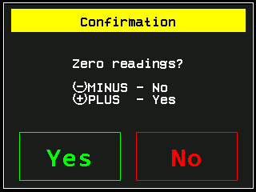
The question before the readings are zeroed. Press “PLUS” for “Yes”, or touch “Yes”. “MINUS”, “No” or “BACK” cancels.
On “Yes” the readings of all sensors are zeroed — seed, dry fertilizer and liquid fertilizer — whichever table you are looking at. Only the readings of this screen: the field statistics are not touched.
What else zeroes them
- Selecting another active field on the Statistics screen.
- Erasing the statistics of the active field.
- Switching the panel off — the readings belong to the working session.
The interval figures — quality, doubles, skips and the rates — are also renewed by the panel itself with every completed recalculation interval once the machine moves again. The seed counters stay.
Start work on a new field
Choose the field the panel writes its statistics to, and erase it if it is not empty — before the first pass on a new field.
The panel keeps the statistics of several fields. It writes to one of them, the active field, marked (A) on the Statistics screen. Before the first pass on a new field, make an empty field the active one.
On the home screen, press “HOME” twice. The Statistics screen opens with the active field.
Press “PLUS” or “MINUS” until the field you want is shown. Fields without (A) are not active.
Press “MENU”. The menu of the screen opens.
The menu of the Statistics screen. Select “Select field” and press “MENU”. The item is shown only for a field that is not active.
The panel asks “Are you sure?”. Press “PLUS” for “Yes”. The field is now active, marked (A), and the readings of the Seeding table start from zero.
If the field already holds data from other products than the machine applies now, the panel first asks to erase that field; at the Operator level it also wants the code of a higher access level.
Erase a field that holds old data
Show the field on the Statistics screen and press “MENU”.
Select “Zero statistics” and press “MENU”.
At the Operator level, type the code of the Agronomist level on the number pad. Above Operator, the panel asks “Are you sure?” — press “PLUS” for “Yes”.
The statistics of that field are erased for good. The lifetime totals under “Mileage” are not affected.
Fill the disks with seeds
Turn the seed disks of a planter with dispenser motors until every disk holds seed, so that sowing starts from the first metre — how to run it and read the result.
This applies only to planters with seed dispenser electric motors in the “Precise” mode. Without seed motors in the profile, or in another mode, the menu item is not shown.
When the disks are driven by electric motors, they stand empty until the motors run. Drive off with empty disks and the first metres of every row get nothing: each disk first has to pick up seeds and carry them round to the drop point. Filling turns the disks while the machine stands still, so that sowing starts from the first metre.
Stop the machine. While it moves, the item is hidden.
On the home screen, press “MENU”. Select the first item, “Fill the disks with seeds”, and press “MENU”. It is open at every access level.
The panel asks for confirmation. Press “PLUS” or touch “Yes”. “MINUS”, “No”, “BACK” or a touch beside the window cancels.

The question before the disks turn. Watch the tiles. Each motor turns its disk at 4 rpm of the driven shaft until the seed sensor of its row registers the first seed. While the operation runs, the bottom line tells you that “BACK” aborts it.
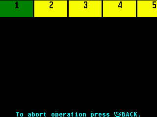
The operation running: tile 1 is done and green, the others are still turning. When every motor has finished, the panel gives three short beeps and shows “Operation complete.” Read the tiles at leisure, then press “BACK” to return to the main menu.
To stop early, press “BACK”: every motor stops at once, goes back to the seeding logic, and the screen closes. You can start again straight away. On this screen only “BACK” works; the other buttons and touches do nothing.
Reading the tiles

| Tile | State |
|---|---|
| Dark grey, full height | Waiting its turn — only eight motors run at once. |
| Yellow, upper part | Running: the disk is turning. |
| Green, upper part | Done: the seed sensor registered a seed. |
| Dark red, full height, bright red number | Failed: the disk could not be filled. The letters say why. |
A motor fails if no seed is registered within 1.25 turns of the shaft — about nineteen seconds. A motor that reports a fault is stopped and failed at once; a motor out of control does not turn and counts as failed. Extra motors without a seed sensor of their own turn their disks but are reported as failed, because no seed can be seen. Fertilizer motors take part only if they too run in “Precise”, each paired with the fertilizer sensor of the same number.
Letters on a failed tile
The letters stand always in the same places — m left, g middle, s right — and red means a fault, white means out of control.
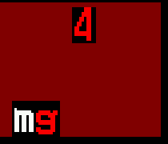
| Letter | Meaning |
|---|---|
| m red | A fault of the motor during the operation. |
| m white | The motor is out of control and cannot run. |
| g red | The seed sensor saw no seed while the disk turned. |
| s red | A fault of the seed sensor during the operation. |
| s white | The seed sensor is out of control, or the motor has no seed sensor paired with it. |
If the seed sensor is out of control, a serviceable motor still turns the disk about one and a quarter turns, so the disk does get filled — but the panel reports a failure, because it never saw a seed.
Assign a product to a dispenser motor
Tell the panel which of its three products each dispenser motor applies, so that one target rate in kg/ha serves all motors of that product.
Every dispenser electric motor drives one dispenser and belongs to exactly one product. The panel keeps up to three products: “Product 1”, “Product 2” and “Product 3”. Several motors may apply the same product; its rate is then set once for all of them. In the factory state all motors are “Product 1”.
This needs the Agronomist level (Enable the Agronomist level) and motors in the “Flow” or “Hybrid” mode.
Go to the Motors screen and hold “MENU”. The first motor is selected.
The Motors screen with a motor selected. Select the motor with “UP” and “DOWN”.
Press “MENU”. The context menu opens.
Go to “Type of product” with “DOWN”.
Choose the product with “PLUS” and “MINUS”.
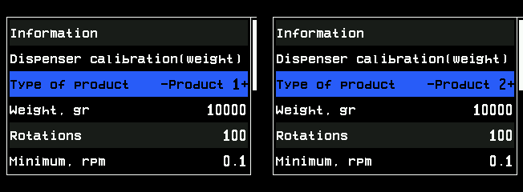
Type of product before and after the change. If the panel asks to erase the statistics, press “MENU” for “Yes” or “BACK” for “No”.

The question before the product type is changed on a field with data. Press “BACK”. You are back on the Motors screen. Repeat from step 2 for every other motor.
While you step through the values, a product that a dispenser shaft with weight control already applies is skipped — one product is applied either by motors or by such dispensers, not by both. If no other product is available, the value does not move; that is not a fault.
Then set the rate of each product: Change the target rate, and calibrate each motor: Calibrate a motor by weight.
Calibrate a dispenser motor by weight
Tell the panel how much product a motor-driven dispenser delivers per shaft turn — what you need, the steps on the screen, and what the failure messages mean.
The calibration tells the panel how much product the dispenser delivers per turn of its shaft. Without it, the panel cannot turn the rate in kg/ha into a shaft speed. Calibrate every dispenser separately, and again whenever the product or the seed lot changes. It applies to motors in the “Flow” and “Hybrid” modes.
You need: scales, a container to put under the dispenser, and the product in the hopper.
Stop the machine. While it moves, the calibration item is hidden.
Open the context menu of the motor — on the Motors screen, or from its product on the rate control screen. Select “Dispenser calibration(weight)” (from the rate control screen: “Calibration, product”) and press “MENU”.
The first screen shows the target rates of the products in use — the product of this motor between arrows — and under “Product dosage speed limitation:” the lowest and highest travel speed at which the rates can be applied. Press “PLUS”.

The first calibration screen with the speed limits. The screen lists what to do before calibrating: weigh the empty container and note the weight, fill the hopper, put the container under the dispenser, fill the rotor cells. Press “MENU” to fill the rotor cells.

The list of actions before the calibration. The motor turns the shaft and the “Rotations” counter runs. After two turns the panel stops the motor and returns. “BACK” stops it earlier.
Press “UP”. The screen lists the steps of the calibration itself: empty the container, put it under the dispenser, calibrate, stop the motor, weigh. Empty the container and put it back.
Press “MENU”. The motor runs and the dispenser fills the container. Collect as much as possible — at least 1 kg, at most 60 kg.
Press “BACK” to stop the motor.
After more than one shaft turn, the bottom line offers “MINUS” to complete the calibration. Press “MINUS”.
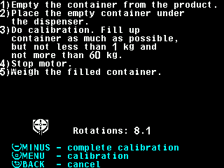
The calibration screen with the line for completing it. Weigh the full container. On the number pad, type the difference between full and empty, in grams, and press “MENU”. The panel stores “Weight, gr” and “Rotations” and returns to the first screen.

The number pad asking for the weight in grams. Press “BACK” to leave.
To discard the calibration instead of step 9, press “BACK”: the panel asks “Are you sure?” and discards on “PLUS”; “MINUS” returns to the calibration.
The context menu afterwards shows not your grams but an equivalent pair of numbers; only their ratio matters. It is stored by itself.
Messages during the calibration
| Message | Meaning and what to do |
|---|---|
| “FAILURE” with a reason, e.g. “No connection” or “No data from rotation sensor” | The link was lost, the motor reported an alarm, or no shaft turns arrived for ten seconds. The motor is stopped, nothing is stored. “BACK” returns to the first screen; start again. |
| “All electric motors not controlled.” | No motor is under control. Take the motor into control with “PLUS” on the Motors screen. |
| The motor name in red with “Not controlled”, “No connection” or “FAILURE” | The calibration cannot start until that state is cleared. |
| “Can not provide dosage!”, limits in red | The rates contradict each other: no speed meets them all. Change a rate, or the shaft speed limits — each line names the product that sets it. |
| “Run calibration on the console” | A push-button on the motor controller is set up: the motor runs only while the button is held. |
| The speed must be zero (in English in every language) | The machine is moving. Stop it. |

Set up the tramline rhythm
Tell the Hectare Mini on which bouts which actuator or motor shuts off — the limits, the rhythm editor, its dialogs, and the order that keeps your rhythm from being overwritten.
A tramline is the lane the sprayer will drive in later. You make it while sowing: the panel shuts off seed lines or motors on certain bouts — passes across the field. It counts the passes and starts again at the first after the last. The number of bouts and the list of which device shuts off on which bout make the rhythm. Example: four bouts, actuator 1 shutting off on bout 4 — every fourth pass leaves a tramline.
| Limit | Value |
|---|---|
| Rhythms stored | Three, one active at a time. Keep the patterns of the machines you work with. |
| Bouts in a rhythm | 1 to 50. |
| Tramline actuators | Four at most; the profile item “Tramline actuators” sets how many. |
| Cut-off bouts per device | Four. |
The panel knows nothing more: there is no setting for a starting side or for the width of the tramline. Which seed lines an actuator physically shuts off is set in “Relation of sensors to actuators” (Settings menu); without it the panel counts the bouts but shuts off nothing.
The item “Tramline” exists only if the machine has a tramline actuator, or as many seed motors as seed sensors, or as many fertilizer motors as fertilizer sensors. Setting up needs the Agronomist level (Enable the Agronomist level).
Press “MENU”, then open “Settings” → “Seeding machine parameters” → “Tramline”. Set “Tramline” to “Yes” with “PLUS”.

The Tramline submenu. Select “Tramline rhythm settings” and press “MENU”. The rhythm editor opens.
Choose the rhythm number with “PLUS” / “MINUS”, press “MENU” and choose “Select”. (“Active”) appears beside the number. Without this the rhythm is stored but not used.
Press “DOWN” to the number of bouts, press “MENU”, set “Bouts” with “PLUS” / “MINUS” and confirm with “MENU”.
Press “DOWN” into the empty row of a section and press “MENU”. Set the device number and the “Bout” on which it shuts off; confirm with “MENU”.
For further cut-off bouts of the same device, press “PLUS” to the cell with the “MENU” sign at the end of its row and press “MENU” — up to four.
Press “BACK”, or hold “HOME”. The rhythm is saved.
The rhythm editor

Read it top down: “Rhythm” with its number between arrows and (Active) if it is in use; under it the number of bouts in a box; then up to three sections — “Tramline actuators activation”, “Tramline motors activation”, “Tramline fert. motors activation” (with both modes “Precise”: “Tramline motors gr.A activation” and “Tramline motors gr.B activation”). Each row names a device — “Actuator”, “Motor”, “Fert.mot.” — and the bouts on which it shuts off; a cell with the “MENU” sign adds a bout or a row. A selected cell is white on blue.
| Button | What it does |
|---|---|
| “UP” / “DOWN” | One row up or down, across the sections. |
| “PLUS” / “MINUS” | On the rhythm number: next / previous rhythm. In a row: one cell right / left. On the number of bouts: nothing — open it with “MENU”. |
| “MENU” | Opens the dialog of the selected cell. |
| “BACK” | Saves and returns to the “Tramline” menu. |
| “HOME” held | Saves and returns to the home screen. A short press does nothing here. |
The dialogs
- Rhythm number: “Select” makes it the one in use; “Reset rhythm settings” deletes its rows and sets its bouts to 1.
- Number of bouts: lowering it deletes entries for bouts that fall away; a row left with no bout disappears. If the current bout was above the new number, counting restarts at 1.
- Row of a device: the device number and “Remove”. Numbers already used in the section are skipped — read the value, do not count presses.
- Bout of a row: “Bout”, “Remove bout” and “Remove all bouts”. Bouts already in the row are skipped. If every bout is already entered, “Unused bouts are not found!” appears instead; any button closes it.
What is stored where
The three rhythms, the number of bouts, the current bout, “Tramline” and “Auto-switching” belong to the settings of the panel and are stored by themselves shortly after the last touch. The profile holds only how many devices there are; on opening, the editor clears rows for which the profile has no device. With “Tramline” at “No”, all actuators and motors return to sowing.
Working in the field: Next tramline bout.
Tramline in the field — bout indicator and next bout
Read the tramline indicator, move to the next bout by hand or let the panel do it from the markers or the implement position, and recognise a line shut off for the tramline.
As soon as “Tramline” is set to “Yes” (Set up the tramline rhythm), the home screen shows the tramline indicator: a wheel-track symbol, and beside it the current bout on top and, smaller, the number of bouts of the rhythm below. With markers in the profile it stands right of the marker indicator.
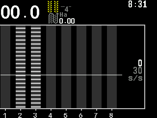
| Symbol | Meaning |
|---|---|
| Grey | The panel moves to the next bout by itself. |
| Yellow | It does not: “Auto-switching” is off, or the machine gives it nothing to switch by. |
| Yellow, alternating with a cross | The machine could switch by itself, but “Auto-switching” is off. |
The columns of the lines shut off are hatched light grey; the flow inside is still shown, hatched: green while it stays below the limit, red above it — and then the panel reports “Seeding to tramline”. The limit is a share of the target rate, “Toler.sowing to tramline,%” of the seed sensor (Sensor settings). Over a sensor that does not answer or is out of control the hatching blinks.
Change the bout by hand
On the home screen, press “BACK”. The bout menu opens. If a rate field is blinking, the first “BACK” only stops the blinking; in the sensor setup mode “BACK” leaves the mode instead.

The bout menu. To set a bout, select “Active bout” and change it with “PLUS” / “MINUS”, from 1 to the number of bouts. It is taken over when the menu closes.
To advance one bout, select “Next bout” and press “MENU”. The menu closes. This item is there only when the panel cannot switch by itself.
Where the panel can switch by itself, the menu offers “Auto-switching” instead: “MENU” toggles it between “Yes” and “No”, beeps and closes the menu.
No higher access level is needed for this.
When the panel switches by itself
It needs something that tells it a bout has ended:
| Machine | What ends a bout |
|---|---|
| With markers | A change of the marker position. At least one marker sensor must be under control and answering. |
| Without markers | Lifting the drill out of work. The implement position sensor must be under control and answering. |
| Neither | Nothing — the menu offers “Next bout” in place of “Auto-switching”. |
Besides, “Auto-switching” must be “Yes” and the bout must really have been driven: while the machine moves (without a speed sensor: while it sows), switching is blocked. It is released when the work stops; the next marker change — or lift — then advances exactly one bout.
The actuator itself
Two settings of a tramline actuator are in its context menu (Sensor settings), Agronomist level:
| Item | Values |
|---|---|
| “Cutoff position” | The position in which it shuts off: “Pulled out” (factory setting) or “Pulled in”. |
| “Switch” | When it moves: “when seeding” (factory setting) or “always”. |
Two alarms concern the actuator: “Illegal state” — it reports both end positions at once; “Stall” — it does not reach the position asked. See Tramline alarms.
Access levels
The three access levels of the Hectare Mini — Operator, Agronomist, Service — what each one opens, what happens to the alarms at the higher levels, and how to get back to Operator.
The panel hides every setting a driver does not need. What a menu shows depends on the access level chosen under “User” in the “Settings” menu. After every power-on the panel starts at “Operator”.
| Level | Who | What it opens |
|---|---|---|
| “Operator” | The driver | Everything for work: the target rates, the fields, the statistics, “Alarm delay”, the date and time, the language. In the context menus: “Information” and the everyday sensor settings such as “Fraction” or “Minimum, rpm”. |
| “Agronomist” | The farmer, the dealer | Also “Seeding machine parameters” (working width, modes, calibrations), the hidden parameters of every sensor, and in the main menu the “Service” menu with “Sensors Configuration” for seed and pressure sensors. |
| “Service” | The service engineer | Also the profile, the configuration of HUB-8 concentrators and tramline actuators, the service screen of the motors, “Reset to defaults” in every context menu and “Reset settings”. The status screen of a sensor shows its address. |
The list under “User” has a fourth value, “Debug”. It is for the manufacturer and has no use in the field.
A raise to “Agronomist” or “Service” asks for the PIN of that level. The PINs are different for every panel: the dealer gives them for your panel. Going down asks nothing. How: Enable the Agronomist level.
In this manual a parameter or menu item says which level it needs. An item you do not see is above your level, or does not apply to the machine in the profile.
What happens to the alarms while the level is high
The only window that still comes is “User is Agronomist! Alarms will not be shown!” — once per session, as soon as the panel sees seeding at the higher level. See User is Agronomist.
When you go back down to “Operator”, the panel drops the alarms that have cleared in the meantime and shows the ones that are still true, one after another.
Back to Operator
- In “Settings” set “User” to “Operator” with “MINUS” and press “MENU”, or
- switch the panel off and on.
Do one of the two after every commissioning or repair, before the machine goes back to work.
What is in the Service menu
The main menu shows “Service” from the “Agronomist” level on. What it holds:
| Item | Level | What it is for |
|---|---|---|
| “Profile” | Service | The list of devices of the machine. The profile |
| “Sensors Configuration” | Agronomist | Gives a new or replaced device its address. Device configuration |
| “Electric motors” | Service | The service screen of the dispenser motors; only with motors in the profile. |
| “Count seeds always” | Agronomist | “Yes”: the Seeding table and the Statistics screen count seeds also in the “Flow” and “Hybrid” modes, not only in “Precise”. |
| “Enter key” | Agronomist | Shown only on a panel with a time-limited licence: enter the licence key from the dealer. |
The remaining items of this menu are for the service engineer and the manufacturer.
Enable the Agronomist level
The steps, with the screen of each, to raise the access level of the Hectare Mini to "Agronomist" or "Service" before changing settings, and to return to "Operator" afterwards.
Sensor parameters, the working width, the calibrations and the device configuration need the “Agronomist” level. The “Service” level is raised the same way. What each level opens: Access levels.
You need the PIN of this panel for that level. It is different for every panel; the dealer gives it.
On the home screen press “MENU”. The main menu opens.
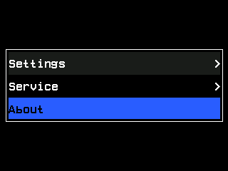
The main menu. Select “Settings” with “UP” / “DOWN” and press “MENU”. The “Settings” menu opens.
Press “DOWN” until “User” is selected — it is the last item. Press “PLUS” until it reads “Agronomist” (or “Service”).

“User” set to Agronomist. Press “MENU”. The PIN pad opens with “Enter your PIN:”; the line under the prompt identifies this panel. Type the PIN on the number pad and touch “OK” or press “MENU”.

The PIN pad. The panel shows the name of the new level for a moment and returns to the “Settings” menu, now with the items of that level — for example “Seeding machine parameters”.

The panel confirms the new level. Press “BACK” to leave the menu.
If the PIN is wrong — or is the PIN of another level than the one chosen in step 3 — the panel shows “Invalid PIN” for a moment and opens the PIN pad again. Type it again, or press “BACK” to give up; the level stays as it was.
When you come back down, the alarms that are still true are shown one after another — see Access levels.
Check the profile and the connections
The first check after installing a Hectare Mini — does the profile match the machine, does every device answer, is every sensor under control — as a procedure with what the screen shows at each step.
The panel watches only the devices its profile lists. Systems are usually delivered with the profile already set, but before you set any parameter, check that it matches the machine and that every device answers. Checking the profile needs the “Service” level, which asks for a PIN — the dealer gives it for your panel; see Enable the Agronomist level. The other two checks need no code.
1. Check the profile
Connect all devices to the panel and power them as the wiring diagram in the data sheet of the system shows.
Switch the panel on. After the splash screen the home screen appears.
Raise the access level to “Service”: “MENU” → “Settings” → “User” → “Service”, “MENU”, PIN — as in Enable the Agronomist level.
Press “BACK”. The main menu returns, now with “Service”. Select “Service” and press “MENU”, then select “Profile” and press “MENU”. The profile menu opens.

The way to the profile: Settings with the Service level, the main menu, the Service menu, the profile menu. Read the profile menu, from the top. Each item is one kind of device with the number the panel expects, for example “Seed sensors”; “Speed” shows how the speed sensor is connected: “Control panel”, “Input device” or “Input device (2)”. “UP” and “DOWN” go through the list, which is longer than the screen. All items: The profile.

The profile menu. Compare the list with the machine and the wiring diagram. Change nothing here: “BACK” leaves the profile menu without saving.
Go back to the “Operator” level: switch the panel off and on, as in Enable the Agronomist level. At the “Service” level the panel shows no alarm windows, and the next check needs them.
If the profile does not match the machine, set it up first: Set up the profile.
2. Check that every device answers
Wait a few seconds on the home screen. If no window “Connection lost” appears, the panel has found every device of the profile.

When several devices of one kind do not answer, one window lists all their numbers — here pressure sensors 1 to 3:

3. Check that every sensor is under control
A sensor out of control is not watched at all. Its indicator shows the blinking grey not-controlled sign, or !!!! in place of the value; under a diagram column it shows a white box with ! — see Indicators.

If there is such a sensor, take it into control:
On the home screen hold “MENU” until the speed indicator has a white background. The panel is in the sensor setup mode. Release the button.
The sensor setup mode, the speed sensor selected. Press “DOWN” (or “UP”) until the sensor out of control is selected. A seed sensor is selected when its number under the column has a white background.
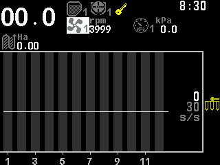
The fan sensor selected. Press “PLUS”. The panel asks whether you are sure; press “MENU” for “Yes”. “BACK” answers “No”.
The question before the control of a sensor changes. Repeat steps 2 and 3 for every sensor out of control. The question comes only the first time while you stay in this mode.
Press “BACK” to leave the sensor setup mode.
Switching the control of a sensor on is what this manual calls taking a sensor into control. More: Take a sensor into or out of control.
The result
Every sensor must be under control, and no indicator may show a red cross — the sign of a device that does not answer.
When everything is right, the home screen shows every device in its normal grey, with no red cross and no not-controlled sign:

Then go on with the settings: Commissioning.
The profile
What the profile of the Hectare Mini is, every item of the profile menu with its values, and the rules a profile must keep before the panel accepts it.
The profile tells the panel which devices the machine has and how many of each. It decides which indicators the home screen shows, which context menus exist and which devices the panel polls. A system is usually delivered with its profile set; change it only when the equipment of the machine changes. How to check it: Check the profile and the connections. How to change it: Set up the profile.
The profile counts what is watched and what is driven, not boxes. One input device can carry, for example, fan sensors and hopper sensors together; one actuator controller can carry an actuator and two marker sensors. Each of them is entered under its own item.
- “Seed sensors” — the selected item.
- The value, here 12, between − and +: change it with “MINUS” and “PLUS”.
- “Fertilizer sensors”.
- “Liq.fert.flow sensors”.
- “Hoppers”.
- “Dispensers”.
- “Speed” — how the speed sensor is connected.
- Its value, here “Control panel”.
- Scroll bar. The list goes on below the screen.
The items
Every item needs the “Service” level, like the menu itself.
| Item | What it states | Values |
|---|---|---|
| “Seed sensors” | Number of seed sensors. | 2 … 60 |
| “Fertilizer sensors” | Number of dry fertilizer sensors. | 0 … 60 |
| “Liq.fert.flow sensors” | Number of liquid fertilizer flow sensors. | 0 … 60 |
| “Hoppers” | Number of hopper level sensors. | 0 … 9 |
| “Dispensers” | Number of dispenser shaft sensors. | 0 … 9 |
| “Speed” | Whether there is a travel speed sensor and where it is connected: “No”; “Control panel” — one sensor on the panel; “Input device” — one sensor on an input device; “Input device (2)” — two sensors on an input device. | see left |
| “GPS” | The built-in GPS receiver as a speed source: “No”; “UBX” — the normal setting; “NMEA” — the receiver delivers its data in the NMEA 0183 format. While it has a valid fix, GPS takes priority over the sensor under “Speed”; without a fix the sensor takes over by itself. GPS reception | see left |
| “Fans” | Number of fan speed sensors. | 0 … 2 |
| “Pressure sensors” | Number of pressure (vacuum) sensors. | 0 … 3 |
| “Work position sensor” | Whether there is a sensor for the working and transport position of the implement. | “No” / “Yes” |
| “Markers” | How the marker arms are watched: “No”; “One” — one sensor; “Both” — one sensor per arm. | see left |
| “No battery charge” | Battery charge sensor of the fan-drive engine. Switch it off together with the ignition sensor. | “No” / “Yes” |
| “Emergency oil pressure” | Low oil pressure sensor of the fan-drive engine. Switch it off together with the ignition sensor. | “No” / “Yes” |
| “Ignition” | Ignition key sensor of the fan-drive engine. | “No” / “Yes” |
| “Low fuel” | Fuel level sensor of the fan-drive engine. | “No” / “Yes” |
| “Air filter” | Air filter sensor of the fan-drive engine. | “No” / “Yes” |
| “EMD of the seeds” | Number of electric dispenser motors for seed. | 0 … 60 |
| “EMD of the fertilizers” | Number of electric dispenser motors for fertilizer. | 0 … 30 |
| “Tramline actuators” | Number of tramline actuators. | 0 … 4 |
| “Liq.fert.pump controller” | Whether there is a pump controller for liquid fertilizer. | 0 / 1 |
| “Save profile” | Saves the profile and restarts the panel. | — |
Rules the profile must keep
“Save profile” refuses a profile that breaks one of these rules and shows “Invalid profile!”:
- at least 2 seed sensors;
- “Hoppers”, “Dispensers” and the five engine sensors together: at most 12; above 10, “Fans” and “Pressure sensors” together may be at most 4;
- “Fans” and “Pressure sensors” together: at most 5;
- seed and fertilizer motors together: at most 60; fertilizer motors only together with seed motors and with fertilizer sensors;
- dispenser motors and a liquid pump controller need a speed sensor.
Set up the profile
The steps to change the profile of the Hectare Mini — reach the profile menu at the Service level, enter the devices of the machine, save, and let the panel restart.
Set up the profile when the equipment of the machine changes — a device added, removed or of another kind. The items and their limits: The profile. The profile menu needs the “Service” level.
Connect all devices to the panel and power them as the wiring diagram in the data sheet of the system shows.
Switch the panel on. After the splash screen the home screen appears; what it shows depends on the present profile.
The home screen after start-up. Raise the access level to “Service”: “MENU” → “Settings” → “User” → “Service”, “MENU”, PIN — as in Enable the Agronomist level.
Press “BACK”. The main menu returns, now with “Service”.
Select “Service” and press “MENU”. The “Service” menu opens with “Profile” as its first item.
Select “Profile” and press “MENU”. The profile menu opens.
The way to the profile: Settings with the Service level, the main menu, the Service menu, the profile menu. Go through the items with “UP” / “DOWN” and set each with “PLUS” / “MINUS” to the equipment of the machine.
The profile menu. Select “Save profile”, the last item, and press “MENU”. The panel asks “Are you sure?” — press “PLUS” for “Yes”, “MINUS” for “No”.
The panel asks you to wait, then shows “Saved” and “Restart system”, and restarts by itself. The new profile is in force after the restart.
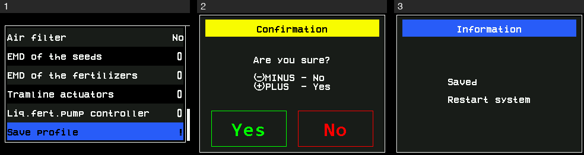
Saving the profile: the item Save profile, the question, then the message Saved and Restart system.
“BACK” leaves the profile menu; the device numbers you changed are not saved. “GPS” is the exception: it is stored at once, like a setting of the “Settings” menu.
When the profile is not saved
| The panel shows | Meaning |
|---|---|
| “No changes” | The profile is the same as the stored one. Nothing is saved, nothing restarts. |
| “Invalid profile!” | The profile breaks a rule — too few seed sensors, too many small indicators, too many fans and pressure sensors, or motors without a speed sensor. See Rules the profile must keep. Correct it and save again. |
After the restart the panel is at the “Operator” level. Check the result as in Check the profile and the connections, then, if the machine makes tramlines, set up the tramline rhythm — always after the profile — Set up the tramline rhythm.
The Settings menu
Every item of the Settings menu of the Hectare Mini — sound, language, diagram settings, date and time, alarm delay, product rate error, machine parameters, user — with its access level, range and default.
“MENU” on the home screen → “Settings”. The menu holds the general settings of the panel. Which items you see depends on the access level (Access levels) and on the machine in the profile.

- “Volume” — the selected item.
- Its value between − and +. “PLUS” and “MINUS” change it on the spot.
- “Language”.
- “Buttons sound”.
- “Change Date&Time” — the arrow head opens a submenu.
- “Alarm delay”, in seconds.
- “Seeding machine parameters” — a submenu, from the Agronomist level.
- Scroll bar. “User” follows further down.
The panel stores every change by itself about one and a half seconds after the last change and the last touch of a button.
The items
| Item | Level | What it does | Range · default |
|---|---|---|---|
| “Volume” | Operator | Loudness of the alarm signal, in per cent. | 0 … 100, steps of 10 · 100 |
| “Language” | Operator | Language of the texts on the screen: English, Ukrainian, Polish, Hungarian, Romanian, Bulgarian or German. | · English |
| “Buttons sound” | Operator | A short beep at every touch the panel accepts. | “No” / “Yes” · “Yes” |
| “Seeding diagram settings” | Operator | How the seed diagram of the home screen is drawn — below. Shown only with a speed sensor and “Mode of seeding” at “Hybrid” or “Precise”. | submenu |
| “Fertil. diagram settings” | Operator | The same for the fertilizer diagram. Shown only with a speed sensor, fertilizer sensors and “Mode of fertilizers” at “Hybrid” or “Precise”. | submenu |
| “Liq.fert. diagram settings” | Operator | “Grid” of the liquid fertilizer diagram. Shown only with a speed sensor, liquid fertilizer sensors and “Mode of liq.fert.” at “By area”. | submenu |
| “Change Date&Time” | Operator | Date and time of the panel — Set the date and time. | submenu |
| “Alarm delay” | Operator | How long a fault must last before the alarm window opens — How alarms work. | 2 … 20 s · 3 s |
| “Product rate error,%” | Agronomist | Permitted deviation of the applied product weight from its target; beyond it the panel raises “Rate of Product 1 is to low!” or “Rate of Product 1 is to high!” (with the number of the product). Shown only when a product is dosed by weight, or with a liquid pump controller. | 3 … 20 % · 5 % |
| “Seeding machine parameters” | Agronomist | Working width, control modes, calibrations — Seeding machine parameters. | submenu |
| “User” | Operator | The access level — Enable the Agronomist level. | “Operator” … “Debug” |
| “Reset settings” | Service | Returns the values of this menu and of “Seeding machine parameters” to the factory values at once, without asking — including “Language” (English), “Width, cm”, the modes, the active field and the “GPS” setting of the profile. | — |
Diagram settings
The submenus “Seeding diagram settings” and “Fertil. diagram settings” hold the same items, each for its own diagram. When the fertilizer sensors run in “Precise”, they are treated as a second seed group, and the items are named “Seeding gr.A diagram” and “Seeding gr.B diagram”.
| Item | Level | What it does | Values · default |
|---|---|---|---|
| “Skips & Doubles” | Operator | Shows or hides the columns of skips and doubles over the last completed stretch. Only in “Precise”. | “No” / “Yes” · “Yes” |
| “Grid” | Operator | “No” — only the target rate line; “Partial” — only the limits of the permitted deviation; “Full” — both. | · “Full” |
| “Scale S&D,%” | Operator | Full height of a skips or doubles column, in per cent of the diagram height. Only in “Precise”. | 5 … 50 %, steps of 5 · 20 % |
| “Reset to defaults” | Service | Returns the three items above to their defaults. | — |
What the diagram shows: The section diagram.
Set the date and time
Set the clock of the Hectare Mini by hand, or let it follow the GPS receiver with a time zone.
The panel stamps the start and end of the work on every field with its clock, and shows the time on the home screen. “Change Date&Time” is in the “Settings” menu at the “Operator” level. What it opens depends on the “GPS” item of the profile.
With GPS in the profile

- “Automatic” — whether the clock follows the GPS receiver.
- Its value, here “No”. Change it with “PLUS” / “MINUS”.
- “Enter date and time” — opens the menu for setting the clock by hand. Shown while “Automatic” is “No”.
- “Automatic” at “Yes”: the clock takes the time from the GPS receiver. The item “Time zone” appears instead of “Enter date and time” — set your offset from UTC with “PLUS” / “MINUS”, from −12:00 to +14:00 in whole hours.
- “Automatic” at “No”: select “Enter date and time” and press “MENU”, then go on as below from step 2.
By hand
“MENU” → “Settings” → “Change Date&Time”, press “MENU”. Without GPS in the profile the menu opens with “Year”, “Month”, “Day”, “Hours”, “Minutes”, “Seconds” and “Set”.
Select an item with “UP” / “DOWN” and change it with “PLUS” / “MINUS”. “MENU” on a number — all items but “Month” — opens the number pad.
Set all six items. After a change of the month, a day that the month does not have is pulled back to its last day.
Select “Set” and press “MENU”. The clock takes the new date and time, and the menu you came from returns.
“BACK” leaves without changing the clock. Every item opens with the present date and time, so you only change what is wrong.
Seeding machine parameters
The submenu with the working width and the control modes of the Hectare Mini, what changing them does to the statistics, and where the two menu calibrations start.
“Settings” → “Seeding machine parameters”, “Agronomist” level (Enable the Agronomist level). Set these first on a new machine — every figure of area and rate is worked out from them.

- “Width, cm” — the selected item.
- Its value between -[ and ]+: “PLUS” / “MINUS” step it, “MENU” opens the number pad.
- “Mode of seeding”.
- Its value, here “Flow”.
- “Speed calibration” — starts the calibration of the speed sensor.
| Item | What it does | Range · default |
|---|---|---|
| “Width, cm” | The working width of the machine. The area, and every rate per hectare, is worked out from it. Always enter it. | 100 … 2500 cm · 560 |
| “Mode of seeding” | How the seed sensors are controlled and shown: “Flow” — seeds per second, for grain drills; “Hybrid” — seeds per metre, possible on grain drills but not used in practice; “Precise” — seeds per metre with skips and doubles, for precision planters. | · “Flow” |
| “Mode of fertilizers” | The same three modes for the fertilizer sensors. Shown only with fertilizer sensors in the profile. | · “Flow” |
| “Mode of liq.fert.” | “Flow” or “By area” for the liquid fertilizer sensors. Shown only with such sensors and no pump controller. | · “By area” |
| “Tramline” | The tramline settings — Set up the tramline rhythm. Shown only if the machine can make tramlines. | submenu |
| “Relation of sensors to actuators” | Which seed lines each tramline actuator or motor shuts off. Shown only when that is not one to one. | screen |
| “Speed calibration” | Calibrate the speed sensor. | — |
| “Dispenser calibration” | Calibrate the dispenser rotation for “ALL” dispensers or for one, by its number. Shown only with dispenser sensors in the profile. | “ALL”, 1 … number of dispensers |
| “Reset to defaults” | “Service” level. Returns the width and the modes to their defaults. | — |
Without a speed sensor in the profile the three mode items and “Speed calibration” are hidden: the panel can only work in “Flow”.
The target rate is set on the home screen, not here — Change the target rate. Its range follows the mode: “Flow” 1 to 1500 seeds per second, “Hybrid” 1 to 200 seeds per metre, “Precise” 0.5 to 50.0 seeds per metre.
What a change does to the statistics
A change between “Flow” and “Hybrid” keeps the statistics.
The two modes depend on each other: the fertilizer sensors can run in “Precise” only while the seed sensors do. The panel refuses the other combinations with a message that names the item to change first. When both run in “Precise”, the fertilizer sensors become a second seed group, and the items read “Mode of seeding gr.A” and “Mode of seeding gr.B”.
If a product dosed by weight is then claimed both by a dispenser sensor and by a motor, the panel switches “Weight control” of the dispenser sensors off and says so in a “WARNING!” window.
Sensor settings
How to reach the settings of one sensor of the Hectare Mini, what every context menu holds, which settings are shared by a group, and which calibrations exist.
Every sensor, motor and actuator has its own context menu: its status screen, its parameters and, for some, a calibration. The parameters of each kind of sensor are in the topics that follow this one.
Reach a sensor
On the home screen hold “MENU” until the speed indicator has a white background. The panel is in the sensor setup mode. Release the button.
The sensor setup mode, the speed sensor selected. Select the sensor with “UP” / “DOWN”. A selected seed or fertilizer sensor shows its number under the column on a white background.
Press “MENU”. The context menu of the selected sensor opens.
Change a value with “UP” / “DOWN” and “PLUS” / “MINUS”, as in any menu. “BACK” closes the context menu; “BACK” once more leaves the sensor setup mode.
What the context menu holds depends on the kind of sensor, on the machine and on the access level. A parameter you do not see is either above your level or does not apply — the topic of each sensor says which.
The context menu
- “Information” — opens the status screen of this sensor. Every context menu starts with it. The sensor status screen
- An action of this kind of sensor — here “Speed calibration”. A dispenser sensor has “Dispenser calibration(weight)” instead; seed and fertilizer sensors have “Product application”.
- A parameter — here “Pulses” of the speed sensor.
- Its value. Select the line; the value stands between − and + and changes with “MINUS” / “PLUS”.
- Scroll bar. More parameters follow; the last item is “Reset to defaults”.
“Reset to defaults” returns the parameters of this sensor to the factory values. It needs the “Service” level and acts at once, without asking.
The context menu reached from the status screen with “MENU” has “Disable control” or “Enable control” as its first item instead of “Information” — see Take a sensor into or out of control.
One set for a group, or one per sensor
| Sensors | Settings |
|---|---|
| Seed sensors | One set for all of them. Change it on any seed sensor — it applies to every one. Only “Product application” is set per line. |
| Fertilizer sensors | One set for all fertilizer sensors, separate from the seed sensors. “Product application” per line. |
| All other sensors | Each sensor has its own settings — set every dispenser, fan or pressure sensor separately. |
Calibrations
| What it puts right | Where | Level | Machine |
|---|---|---|---|
| Travel speed — “Factor, %” of the speed sensor, over 100 m. Calibrate the speed sensor | “Seeding machine parameters” → “Speed calibration”, or the context menu of the speed sensor | Agronomist; from the context menu also Operator with a PIN | drives 100 m |
| Dispenser rotation — “Wheel, pulses” against “Dispenser pulses”. Calibrate the dispenser rotation | “Seeding machine parameters” → “Dispenser calibration” | Agronomist | drive wheel turned |
| Dispenser by weight — “Weight, gr” and “Weight, pulses”. Calibrate the dispenser by weight | context menu of the dispenser sensor → “Dispenser calibration(weight)” | Operator | standing |
| Dispenser motor by weight. Calibrate a motor by weight | context menu of the motor | Operator | standing |
The two weight calibrations are at the “Operator” level because they must be repeated whenever the product changes.
The kinds of sensor
Speed sensor · Seed and fertilizer sensors · Dispenser sensor · Fan sensor · Pressure sensor · Hopper and work position sensors · Engine sensors · Marker sensors · Dispenser motors
The sensor status screen
How to read the status screen of a Hectare Mini sensor — type, unit, link, live figures and active alarms — and what each kind of sensor shows on it.
“Information” in the context menu of a sensor opens its status screen (Sensor settings). It shows what the panel knows about this one sensor right now — the first place to look when an alarm is not clear.

- Channel selector — which sensor of the whole list this is. “MINUS” shows the previous sensor, “PLUS” the next; the screen stays open.
- “Type:” — the kind of sensor and its number.
- “Unit:” — where the sensor is connected, here “Control panel”. Sensors on the sensor network have no such line.
- “Link:” — the state of the communication. Table below.
- The live figure of this kind of sensor — here the pulse frequency F= of the speed sensor, in Hz.
- “Min speed, km/h” in force. ---- means switched off.
- “Max speed, km/h” in force.
At the “Service” level a line with the address of the sensor in the sensor network is added at the top. When the sensor has active alarms, two red lines appear at the bottom: “Alarm 1 from 2” and the name of the alarm shown.
| Button | Action |
|---|---|
| “PLUS” / “MINUS” | Next / previous sensor. |
| “UP” / “DOWN” | Next / previous active alarm of this sensor. |
| “MENU” | The context menu of this sensor, with “Disable control” or “Enable control” as first item. At “Operator”, while the machine moves, “MENU” does nothing on the speed sensor. |
| “BACK” | Back to the screen you came from. |
Link states
| State | Meaning |
|---|---|
| “Normal” | The sensor answers. |
| “Not controlled” | The sensor is out of control: neither its communication nor anything else is watched. |
| “No connection” | The sensor does not answer. Red. |
| “Wrong device type!” | Something answers, but not the kind of device the profile expects. Red. |
| “IMITATION” | Speed sensor only: the speed is simulated, not measured. Yellow. |
The live figures and the alarms are shown only while the sensor is under control, answers, and is of the right kind.
What each kind of sensor shows
| Sensor | Live figures |
|---|---|
| Speed sensor | F= in Hz; with two sensors F1= and F2=. Then “Min speed, km/h” and “Max speed, km/h”. With motors that dose by weight, the limits are those the motors can hold, narrowed by the two settings; a limit the settings cannot meet is written in red. |
| Seed and fertilizer sensors | Status: and the state of the sensor — below. |
| Dispenser sensor | F= in Hz, to three decimals. |
| Fan sensor | F= in Hz. |
| Pressure sensor | P= in kPa. |
| Hopper sensor | Pin: with the level on the input, "0" or "1". |
| Work position sensor | “Position: Working” or “Position: Transporting”, and Pin: with the level on the input. |
| Ignition, oil pressure, battery charge, fuel level, air filter | Pin: with the level on the input. |
| Liquid fertilizer flow sensor | Status: “Working”, or Working:Tramline in a tramline bout; Flow= in L/min. |
| Dispenser motor | Status: “Working” or “Faulty”; after a fault Last fault: with the code of the controller. |
States of a seed or fertilizer sensor
| Status | Meaning |
|---|---|
| “Working” | Normal. Working:Tramline — normal, in the tramline mode of this bout. |
| “Configuring” | The sensor has received new settings from the panel and is applying them. |
| “Calibration in progress” | The sensor runs its initial calibration; it takes a few seconds. |
| “Clogged” | Something blocks the optical channel — the coulter or seed tube may be blocked. Red. |
| “Light struck” | Too much sunlight falls on the sensor; it cannot count. Red. |
| “Faulty” | The sensor has failed and must be replaced. Red. |
| “Unknown” | Another fault that cannot be identified. Red. |
Travel speed sensor
Every parameter of the travel speed sensor of the Hectare Mini — pulses, count period, wheel diameter, factor, seeding criteria, speed limits, imitation — with its range and default.
Area, rates, skips and doubles are all worked out from the distance travelled. A speed sensor that is out by a tenth makes every figure on the panel wrong by a tenth. Set “Pulses” and “Diameter, cm”, then calibrate (Calibrate the speed sensor) — the calibration sets “Factor, %”. The speed sensor cannot be taken out of control.
Open its context menu as in Sensor settings. Its parameters need the “Agronomist” level (Enable the Agronomist level).
“Speed calibration”, right under “Information”, is shown only while the machine stands. At “Operator” it asks for the PIN of a higher level.
| Parameter | What it does | Range · default |
|---|---|---|
| “Pulses” | Pulses of the sensor per revolution of the shaft it sits on. | 1 … 1000 · 6 |
| “Count period” | Over how many of the latest pulse intervals the panel averages the speed. The panel always takes at least 8 and at most 16, none older than two seconds: a higher value gives a steadier but slower figure, values below 8 act as 8. Shown only for a sensor connected to the panel. | 1 … 1000 · 1 |
| “Diameter, cm” | Diameter of the drive wheel. | 10 … 200 · 60 |
| “Factor, %” | Gear ratio between the wheel and the shaft of the sensor, for a sensor on an intermediate shaft or on the dispenser shaft driven by gears or chain. 100 is a direct 1 : 1 drive. Best left to the calibration. | 1 … 10000 · 100 |
| “Seeding criteria” | “Yes”: travel is part of the condition under which the panel starts to control the seeding — see When the panel controls the seeding. “No”: the travel speed is left out of that condition — for drills whose speed sensor sits before the clutch. Hidden, and always “Yes”, in the “Precise” mode and on machines with dispenser motors. | “No” / “Yes” · “Yes” |
| “Min speed, km/h” | Below this speed, while the panel is controlling, the speed indicator shows “FASTER”. “No” switches the check off. | “No”, 1 … 99 · “No” |
| “Max speed, km/h” | Above this speed, while the panel is controlling, the speed indicator shows “SLOWER”. “No” switches the check off. | “No”, 1 … 99 · “No” |
| “Imitation, km/h” | A simulated speed, to keep working with a faulty sensor. “No” = the sensor is used. | “No”, 1 … 20 · “No” |
| “Width, cm” | Distance between the centres of the two wheels. Shown only with “Input device (2)” in the profile. | 0 … 10000 · 280 |
The minimum must stay below the maximum: a value that would reach the other limit is not accepted. On a machine with dispenser motors the limits in force are also narrowed to the speeds the motors can dose; if a limit cannot be met, the panel raises “Error in settings of Min/Max” (Speed sensor alarms).
Working out the factor
If you do not calibrate, the factor can be calculated: k = Na / Nt × 100 %. Na is the product of the numbers of teeth of all driven gears (the even-numbered ones), Nt the product of the numbers of teeth of all driving gears (the odd-numbered ones), counted from the gear on the shaft of the drive wheel.
If the tractor has a speedometer and the panel shows another speed: Knew = Kcurrent × Vtractor / Vpanel.
Imitation
With motors the imitated speed is also kept inside the range the dosing allows: a value outside it is pulled to the nearest limit. While the speed is imitated, the link line of the status screen reads “IMITATION” in yellow, and the speed indicator shows the imitation sign.
The speed can also come from the built-in GPS receiver. That is switched on in the profile, item “GPS”, not here — The profile, GPS reception.
The status screen
It shows the pulse frequency F= in Hz and the two limits in force — see The sensor status screen.
Calibrate the speed sensor
Drive a marked 100 m so that the Hectare Mini corrects the factor of the travel speed sensor — started from the Seeding machine parameters or from the context menu of the sensor.
The calibration measures the distance the panel counts over a marked 100 m and corrects “Factor, %” of the speed sensor. Do it before the first seeding and after any change to the wheel or its drive. Set “Pulses” and “Diameter, cm” first (Travel speed sensor) — the calibration corrects the factor; it cannot replace a wrong pulse figure.
Mark out 100 m on level ground, as close to field conditions as you can, and put the machine at the start.
From the Seeding machine parameters
Raise the level to “Agronomist” (Enable the Agronomist level).
“Settings” → “Seeding machine parameters”, select “Speed calibration” and press “MENU”.

The way to the calibration: the Settings menu and the Seeding machine parameters, then the calibration window. The panel shows “Pass 100m and press MENU” with a “STOP” button. Drive the marked distance and stop at the end.
Press “MENU” or touch “STOP”. The panel shows “Done” and closes the window by itself.
From the context menu of the speed sensor
Hold “MENU” on the home screen, select the speed indicator, press “MENU”. The context menu opens.
Select “Speed calibration” and press “MENU”. The item is shown only while the machine stands.
At the “Operator” level the PIN pad opens: type the PIN of the Agronomist or Service level. At “Agronomist” the panel asks “Are you sure?” — press “PLUS” for “Yes”.

The calibration from the context menu: the item, the PIN request at the Operator level, the calibration window. Go on as in steps 3 and 4 above.
The PIN given here starts this one calibration; the access level stays as it was.
While the calibration runs, product application is locked; it returns to its state before the calibration when the window closes. The panel waits half a second after “STOP” and checks the connection to the sensor once more before it takes the result.
When it does not work
| The panel shows | Meaning |
|---|---|
| “No speed sensor” | The profile has no speed sensor. The calibration does not start. |
| “Connection lost with the sensor! Calibration canceled!” | The sensor does not answer — at the start, or at the moment of “STOP”. |
| “Sensor not controlled! Calibration canceled!” | The speed sensor is out of control. |
| “FAILURE! The tractor did not move!” | The sensor gave no pulses at all over the distance. Check the sensor, its gap to the target and its cable. |
| “Calibration canceled!” | The window was closed with “BACK” or a touch outside. Nothing has changed. |
| “Invalid PIN” | The PIN asked at the “Operator” level was wrong. The calibration does not start. |
If the speed on the panel still differs from the real speed after the calibration, check “Pulses” and “Diameter, cm” and calibrate again.
Seed and fertilizer sensors
The settings of the seed sensors and the fertilizer sensors of the Hectare Mini — fraction for the crop, correction, error limits, recalculation path, percent of sowing — and when the panel starts to control the seeding.
The seed sensors share one set of settings: change it on any seed sensor and it applies to all. The fertilizer sensors share a second set. Only “Product application” is set line by line. Open the context menu of any sensor of the group as in Sensor settings.

| Parameter | Level | What it does | Range · default |
|---|---|---|---|
| “Product application” | Agronomist | “Yes”: this line sows and is watched. “No”: the line is treated as shut off, like a line in a tramline bout — seed through it raises “Seeding to tramline”. Not shown when every line of the group has its own motor. | “No” / “Yes” |
| “Sensitivity” | Agronomist | Sensitivity of a seed sensor of an older generation. Shown only when such a sensor is connected. | 1 … 120 · 80 |
| “Fraction” | Operator | The count filter of the sensors, set for the size of the seed — a filter against dust and chaff. Change it with the crop — table below. | 1 … 100 · 10 |
| “Correction” | Operator | Adapts the sensitivity to the bracket of the sensor. A higher value lowers the sensitivity and keeps dust and fine dirt out of the count. Shown only for the sensor generation that uses it. | 100 … 3300 · 300 |
| “Rate error,%” | Agronomist | Permitted deviation of the measured rate from the target; beyond it “Under allowable rate” or “Over allowable rate”. Only in “Hybrid” and “Precise”. | 5 … 95 % · 50 % |
| “Doubles error,%” | Agronomist | Above this share of doubles: “High % of doubles”. “No” switches the alarm off. Only in “Precise”. | “No”, 1 … 95 % · “No” |
| “Skips error,%” | Agronomist | Above this share of skips: “High % of skips”. “No” switches the alarm off. Only in “Precise”. | “No”, 1 … 95 % · “No” |
| “Recalculation,m” | Operator | The stretch over which skips, doubles and quality are collected for the diagram and the Seeding table. Without a speed sensor it is “Recalculation,sec”, in seconds. “MENU” on it lets the panel calculate it — Let the panel calculate the recalculation path. | 10 … 50 · 20 |
| “Percent of sowing,%” | Agronomist | The share of sowing lines the panel needs before it starts to control the seeding — below. Seed sensors only; not shown on machines with dispenser motors. | 5 … 80 %, steps of 5 · 20 % |
| “Toler.sowing to tramline,%” | Agronomist | How much seed may still pass a line shut off for a tramline, in per cent of the target rate, before “Seeding to tramline”. | 0 … 50 % · 20 % |
| “Group start address” | Service (seed), Agronomist (fertilizer) | Where the numbering of this group starts in the sensor network. Leave it at “AUTO” unless the service tells you otherwise. | “AUTO”, … |
In “Flow” mode a line is in alarm only when it stays below the alarm level; there is no upper limit. The target rates and alarm levels themselves are set on the home screen — Change the target rate.
Fraction for the crop
Go by the size of the seed:
| Crop | “Fraction” |
|---|---|
| Rapeseed | 1 – 5 |
| Wheat | 5 – 10 |
| Maize | 10 – 30 |
| Sunflower | 10 – 30 |
On pneumatic drills set 1 whatever the crop. Too high a fraction makes small seeds disappear from the count — the panel then reports too low a rate.
When the panel controls the seeding
The panel starts to watch the seeding — and to raise seed alarms — only when seed flows within the target rate through at least “Percent of sowing,%” of the seed lines, and, if “Seeding criteria” of the speed sensor is “Yes”, the machine moves (Travel speed sensor). Until then the diagram shows “NOT UNDER CONTROL” — see Seeding alarms. With a work position sensor whose “Alarms criteria” is “Yes”, nothing is watched in the transport position (Hopper and work position sensors).
The status screen
Shows Status: with the state of the sensor — “Working”, “Clogged”, “Light struck” and the others: The sensor status screen.
Let the panel calculate the recalculation path
Let the Hectare Mini work out the best "Recalculation,m" for skips and doubles from the target rate and the holes in the disk — with or without dispenser motors.
“Recalculation,m” of the seed sensors is the stretch over which the panel collects skips, doubles and quality before it updates the diagram and the Seeding table (Seed and fertilizer sensors). A stretch that covers whole turns of the seed disk gives the steadiest figures. The panel can work it out from the target rate in seeds per metre and the number of holes in the disk.
Set the target rate on the home screen first — Change the target rate. The calculation uses the target of the “Precise” mode.
Open the context menu of any seed sensor (Sensor settings), select “Recalculation,m” and press “MENU”.
With dispenser motors the panel asks whether the rate and the number of holes are set — “Calculate path?”. Press “PLUS” for “Yes”. It takes the holes from “Holes in disk” of the motor (The context menu of a motor).
Without motors it first reminds you that the seeding rate must already be set; close the message. Then type the number of holes in the disk in the “Holes in disk” pad (1 to 500) and touch “OK”.
The panel calculates the path and sets it: the longest stretch of whole disk turns, up to ten, that fits into 50 m, doubled while it is shorter than 25 m.
If even one turn of the disk is longer than 50 m, the panel shows “Calculated path to big. Maximum setuped.” and sets 50 m.
“No” in step 3, or “BACK” on the pad, leaves the path as it was. You can always set “Recalculation,m” by hand with “PLUS” / “MINUS”, from 10 to 50 m.
Without a speed sensor the item is “Recalculation,sec” and the stretch is counted in seconds.
Dispenser shaft sensor
The settings of a dispenser shaft sensor of the Hectare Mini — the period for "No rotation", the control of the shaft speed against the travel speed, and the control of the product weight — with ranges and defaults.
A dispenser shaft sensor counts the turns of the metering shaft. At the least it tells you that the shaft has stopped. Calibrated, it also watches the shaft speed against the travel speed, or counts the weight of product applied. Each dispenser sensor has its own settings — set every one.
Open its context menu as in Sensor settings.
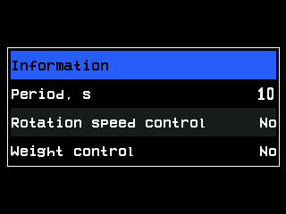
| Parameter | Level | What it does | Range · default |
|---|---|---|---|
| “Dispenser calibration(weight)” | Operator | Starts the calibration by weight — Calibrate the dispenser by weight. Shown only with “Weight control” at “Yes”. | — |
| “Period, s” | Operator | The longest time between two pulses of the sensor. If the shaft gives no pulse for longer while the machine sows or moves, the panel raises “No rotation”. | 1 … 60 s · 10 s |
| “Rotation speed control” | Agronomist | “Yes”: the shaft speed is watched against the travel speed, within “Maximum error, %”. “No”: only whether the shaft turns at all. Needs the rotation calibration. | “No” / “Yes” · “No” |
| “Wheel, pulses” | Agronomist | Pulses of the speed sensor that go with “Dispenser pulses” of this sensor. Written by the rotation calibration. Shown with “Rotation speed control” at “Yes”. | 1 … 65535 · 100 |
| “Dispenser pulses” | Agronomist | Pulses of this sensor that go with “Wheel, pulses”. Written by the rotation calibration. | 1 … 65535 · 100 |
| “Maximum error, %” | Agronomist | Permitted deviation of the shaft speed; beyond it, while the machine moves, “Low speed of rotation” or “High speed of rotation”. | 1 … 50 % · 10 % |
| “Weight control” | Agronomist | “Yes”: the panel counts the weight of product applied per hectare from the turns of this shaft. Needs the calibration by weight. | “No” / “Yes” · “No” |
| “Type of product” | Agronomist | Which product this dispenser applies: “Product 1”, “Product 2” or “Product 3”. Shown with “Weight control” at “Yes”. | · “Product 1” |
| “Weight, gr” | Agronomist | Weight of product that goes with “Weight, pulses” — together the output of the metering unit per turn. Written by the calibration by weight. | 1 … 65535 · 10000 |
| “Weight, pulses” | Agronomist | Pulses of this sensor that go with “Weight, gr”. | 1 … 65535 · 100 |
Without a speed sensor in the profile the panel can only watch whether the shaft turns: the speed and weight items are hidden.
Type of product
The panel follows up to three products by weight. Dispensers that apply the same product get the same number:
| Machine | Setting |
|---|---|
| One dispenser sensor | “Product 1”. |
| Two dispensers, the same seed | “Product 1” on both. |
| Two dispensers, seed and dry fertilizer | “Product 1” on the seed dispenser, “Product 2” on the fertilizer dispenser. |
| Three dispensers, two for seed, one for fertilizer | “Product 1” on the two seed dispensers, “Product 2” on the third. |
A product already dosed by an electric motor cannot be chosen here; the panel skips to the next free one. If no product is free, “Weight control” stays at “No”.
The status screen
Shows the pulse frequency F= in Hz, to three decimals — The sensor status screen.

Calibrate the dispenser rotation
Turn the drive wheel so that the Hectare Mini learns how many dispenser pulses go with how many wheel pulses — needed before "Rotation speed control" can watch the shaft speed.
With “Rotation speed control” at “Yes”, a dispenser sensor watches whether the shaft turns as fast as the travel speed demands (Dispenser shaft sensor). For that the panel must know the ratio between the pulses of the speed sensor and the pulses of the dispenser sensor. The calibration measures it and writes “Wheel, pulses” and “Dispenser pulses”.
Before you start: the speed sensor and the dispenser sensors to be calibrated must be under control and must answer. You need the “Agronomist” level (Enable the Agronomist level). Raise the machine so that the drive wheel can be turned, or be ready to move it.
“Settings” → “Seeding machine parameters”. Select “Dispenser calibration”.
Choose with “PLUS” / “MINUS” which dispensers to calibrate: “ALL”, or the number of one dispenser.
Press “MENU”. The “Calibration” screen opens with a progress bar at 0 %.
Turn the drive wheel. The bar fills as pulses come in from the wheel and from every dispenser being calibrated.
At 100 % — at least 100 pulses from each — the panel beeps and shows “Stop rotation!”. Stop turning.
When no pulse has come for two seconds, the panel stores the values and shows “Done”; the “Seeding machine parameters” menu returns.
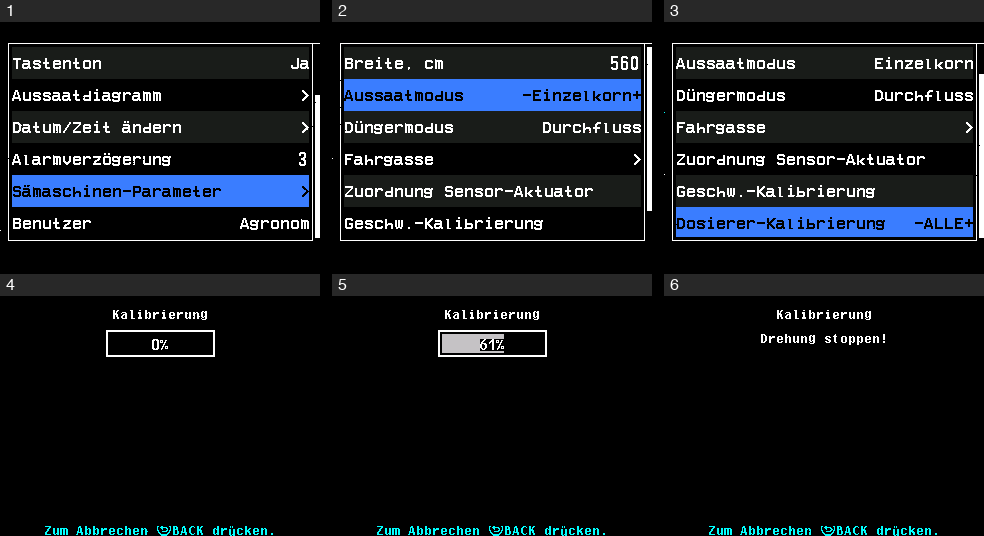
Screen shown in German“BACK” at any moment aborts with “Calibration canceled!”; nothing changes.
| The panel shows | Meaning |
|---|---|
| “Sensor not controlled! Calibration canceled!” | The speed sensor or a dispenser sensor to be calibrated is out of control. Take it into control (Take a sensor into or out of control). |
| “Connection lost with the sensor! Calibration canceled!” | The speed sensor or a dispenser sensor does not answer, at the start or during the calibration. |
The more you turn before “Stop rotation!”, the better: the values are scaled down by themselves if the count grows beyond what they can hold.
Calibrate again after any change to the drive between the wheel and the dispenser — sprockets, gearbox or variator.
Calibrate the dispenser by weight
Turn the dispenser into a container and weigh it, so that the Hectare Mini knows how much product one turn of the shaft applies — needed for "Weight control".
With “Weight control” at “Yes”, the panel counts the product applied from the turns of the dispenser shaft (Dispenser shaft sensor). The calibration measures the weight per pulse and writes “Weight, gr” and “Weight, pulses”. It is done at the “Operator” level, standing.
You need a container, scales and a way to turn the dispenser shaft by hand.
On the home screen hold “MENU”, select the dispenser sensor and press “MENU”. The context menu opens.
Select “Dispenser calibration(weight)” and press “MENU”. The calibration screen shows the target rates of the products in use — the product of this dispenser between arrows — and “PLUS - calibrate dispenser 1” with the number of the dispenser.
Press “PLUS”. The panel lists what to do before the calibration: weigh the empty container and write the weight down; fill the hopper; put the empty container under the dispenser; turn the rotor until its cells are filled. Do all of it, then press “UP”.
The next screen lists the calibration itself and counts the “Impulses” from the sensor: empty the container, put it back under the dispenser, and turn the rotor, filling the container — as much as possible, between 2 kg and 60 kg.
As soon as more than ten pulses have been counted, the line “MINUS - complete calibration” appears. Go on turning until the container holds as much as you can manage — at least 100 pulses and 5 kg give a good result. Then stop.
Press “MINUS”. The number pad opens: “Enter the difference of the filled and empty container in grams”.
Weigh the full container, subtract the empty weight, type the difference in grams (2000 to 60000) and touch “OK”. The panel stores the values and returns to the first screen.
Press “BACK” to leave.
 Screen shown in German
Screen shown in German
“BACK” on the list before the calibration cancels it. “BACK” during the calibration asks “Are you sure?” — “PLUS” cancels, “MINUS” goes on. “BACK” on the number pad keeps the old values.
When it does not start or stops
“PLUS” in step 3 works only while the sensor is under control, answers and has no alarm. Otherwise the first screen names the reason — “Not controlled”, “No connection” or “FAILURE”. If the sensor fails during the calibration, the panel shows “FAILURE” with the reason; “BACK” returns to the first screen.
Fan sensor
The settings of a fan speed sensor of the Hectare Mini — minimum and maximum fan speed and pulses per revolution — and when the panel raises its alarms.
A fan sensor counts the revolutions of the fan of a pneumatic drill or planter. The home screen shows the fan speed in rpm. Each fan sensor has its own settings.
Open its context menu as in Sensor settings.

| Parameter | Level | What it does | Range · default |
|---|---|---|---|
| “Minimum, rpm” | Operator | Lowest permitted fan speed. Below it the panel raises “Low speed of rotation” — but only while the machine sows, or moves in the working position. | 500 … 9000 rpm, steps of 500 · 3000 |
| “Maximum, rpm” | Operator | Highest permitted fan speed. Above it the panel raises “High speed of rotation” — at any time, also standing. | 500 … 9000 rpm, steps of 500 · 5000 |
| “Pulses” | Agronomist | Pulses of the sensor per revolution of the fan. | 1 … 60 · 2 |
A fan speed that looks right but triggers alarms usually means a wrong “Pulses”: twice the pulses show half the speed.
What sowing and moving mean for the panel — When the panel controls the seeding. Without a speed sensor the minimum is watched while the panel sees seeding. With a work position sensor whose “Alarms criteria” is “Yes”, the minimum is not watched in the transport position.
The status screen
Shows the pulse frequency F= in Hz — The sensor status screen. The fan speed in rpm is this frequency × 60 ÷ “Pulses”.
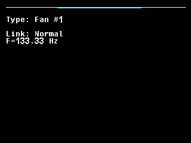
The alarms of the fan and what to check: Fan or dispenser shaft: speed alarms.
Pressure sensor
The settings of a pressure (vacuum) sensor of the Hectare Mini — filter, minimum and maximum pressure — and when the panel raises its alarms.
A pressure sensor measures the vacuum (or overpressure) of the air system — for example at the outlet of the fan or in the seed meters of a vacuum planter. The panel works with the absolute value: a higher figure means more vacuum. Each pressure sensor has its own settings.
Open its context menu as in Sensor settings.

| Parameter | Level | What it does | Range · default |
|---|---|---|---|
| “Filter” | Agronomist | How long the sensor measures and averages the pressure. Raise it if the figure jumps a lot. | 1 … 16 · 1 |
| “Minimum, Pa” | Operator | Below this pressure — too little vacuum — the panel raises “Low pressure”. “No” switches the check off. | “No”, 100 … 10000 Pa, steps of 100 · “No” |
| “Maximum, Pa” | Operator | Above this pressure — too much vacuum — the panel raises “High pressure”. “No” switches the check off. | “No”, 100 … 10000 Pa, steps of 100 · “No” |
Both limits are watched only while the machine sows, or moves in the working position — see When the panel controls the seeding. Without a speed sensor they are watched while the panel sees seeding.
The limits are set in pascals; the status screen shows the pressure in kilopascals: 1 kPa = 1000 Pa.
The status screen
Shows the measured pressure P= in kPa, only while the sensor answers — The sensor status screen.

The alarms and what to check: Pressure alarms. A new or replaced pressure sensor must first get its address — Configure a pressure sensor.
Hopper and work position sensors
The hopper level sensor of the Hectare Mini, which has no settings, and the work position sensor with its transport signal and its alarm criterion.
Hopper level sensor
The hopper sensor reports when the product in the hopper falls below the height at which the sensor is mounted. It has no settings: its context menu holds only “Information” (and “Reset to defaults” at the Service level, which has nothing to reset).
The status screen shows Pin: with the level on its input: "1" — the hopper is empty at the sensor, and the panel raises “Hopper empty”; "0" — product covers the sensor. See Hopper alarms.
Work position sensor
The work position sensor tells the panel whether the implement is lowered in the working position or raised in the transport position. Open its context menu as in Sensor settings.
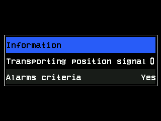
| Parameter | Level | What it does | Values · default |
|---|---|---|---|
| “Transporting position signal” | Agronomist | The level on the input that means transport position: 0 or 1. Set it to what the sensor gives with the implement raised. | 0 / 1 · 0 |
| “Alarms criteria” | Agronomist | “Yes”: in the transport position the panel does not watch the seeding, and the fan minimum, the pressure limits and the dispenser shafts are not watched on the move — no alarms at the headland. “No”: the position is only shown; it does not affect the alarms. Hidden, and always “Yes”, on machines with dispenser motors or a liquid pump controller. | “No” / “Yes” · “Yes” |
On a machine with dispenser motors, a work position sensor that does not answer counts as transport position — for safety, nothing is dosed. Without motors, a sensor that does not answer or is out of control counts as working position.
The status screen shows “Position: Working” or “Position: Transporting”, and Pin: with the level on the input — compare it with the real position when you set “Transporting position signal”. The position changes after a short filter, so a bump does not toggle it.
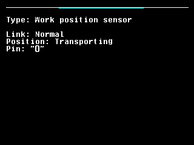
On the home screen the implement indicator blinks yellow in the transport position — see Indicators.
Engine sensors of the fan drive
The five sensors of a separate fan-drive engine on the Hectare Mini — ignition, emergency oil pressure, battery charge, low fuel, air filter — their two settings and how the ignition sensor gates the others.
Drills whose fan is driven by its own engine can watch that engine with up to five switch sensors on an input device. Each is entered in the profile on its own. All five have the same two settings and the same status screen; they differ in what the signal means.

| Parameter | Level | What it does | Range · default |
|---|---|---|---|
| “Activation signal” | Agronomist | The level on the input, 0 or 1, that means the state in the table below. | 0 / 1 · 1 |
| “Signal delay, sec” | Agronomist | How long the input must hold its new level before the panel accepts the change — against false triggering from vibration or a loose contact. | 1 … 30 s · 1 s; “Low fuel” 15 s, “Air filter” 5 s |
| Sensor | The activation signal means | Alarm |
|---|---|---|
| “Ignition” | The ignition of the fan-drive engine is switched on. | none — see below |
| “Emergency oil pressure” | The oil pressure of the engine is too low. | yes, only with the ignition on |
| “No battery charge” | The battery is not being charged by the engine. | yes, only with the ignition on |
| “Low fuel” | Little fuel is left in the tank of the engine. | yes |
| “Air filter” | The air filter of the engine is dirty. | yes |
The defaults of “Signal delay, sec” for “Low fuel” and “Air filter” are set when the sensor is reset to its defaults.
How the ignition sensor gates the others
The ignition sensor raises no alarm of its own. It keeps the oil pressure and battery charge sensors quiet while the engine is off — with the ignition off, low oil pressure and no charging are normal. While the ignition sensor is under control, answers and signals the ignition off, these two stay quiet. If the ignition sensor is out of control or does not answer, they report whatever the state of the ignition.
That is why “Emergency oil pressure” and “No battery charge” should be in the profile only together with “Ignition”, and be taken out together with it.
On the home screen the ignition indicator is yellow while the ignition is off and grey while it is on — see Indicators.
The status screen
Shows Pin: with the present level on the input, "0" or "1" — compare it with the real state of the engine to set “Activation signal”. See The sensor status screen.
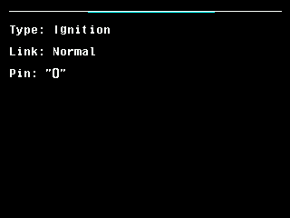
The alarms and what to check: Engine alarms.
Marker sensors
The two settings of the marker arm sensors of the Hectare Mini — which arm a single sensor watches, and which signal means "down".
Marker sensors tell the panel whether the marker arms are up or down. The home screen draws the two arms; both up are shown yellow — see Indicators. How many sensors watch the arms is set under “Markers” in the profile: “One” or “Both”.
Open the context menu of a marker sensor as in Sensor settings. Both settings need the “Agronomist” level.
| Parameter | What it does | Values · default |
|---|---|---|
| “Connected marker” | Which arm the single sensor watches: “Left” or “Right”. Shown only with “Markers” at “One”. | · “Left” |
| “Signal "down"” | The level on the input, 0 or 1, that means the arm is down. Set it to what the sensor gives with the arm lowered. | 0 / 1 · 0 |
The status screen of a marker sensor shows only the common lines — type, link and alarms (The sensor status screen). A marker sensor raises only the alarms every device can raise: “Connection lost” and “Wrong device type!” — see Device does not answer.
Device configuration
What device configuration on the Hectare Mini is for, and how to prepare it — only the one device on the harness, the Agronomist level, the Sensors Configuration menu.
Every device on the sensor network answers on its own address. A seed sensor's address is the number of its row. A new or replaced sensor must get the right address before the panel can find it. This is device configuration, in “Service” → “Sensors Configuration”.
Prepare
Disconnect all sensors from the cable entry of the communication harness on the panel — the four-pin connector.

The cable entry of the communication harness: the four-pin connector, the harness and the power connection. Connect only the device that is to get a new address.
Switch the panel on. When it has started, it reports “Connection lost” for all the devices that are missing. Close the windows with “HOME”.
Raise the level to “Agronomist” — Enable the Agronomist level. For a HUB-8 concentrator or a tramline actuator raise it to “Service”.
Press “BACK” to return to the main menu. Select “Service” and press “MENU”.
Select “Sensors Configuration” and press “MENU”. The menu lists the devices that can be configured.
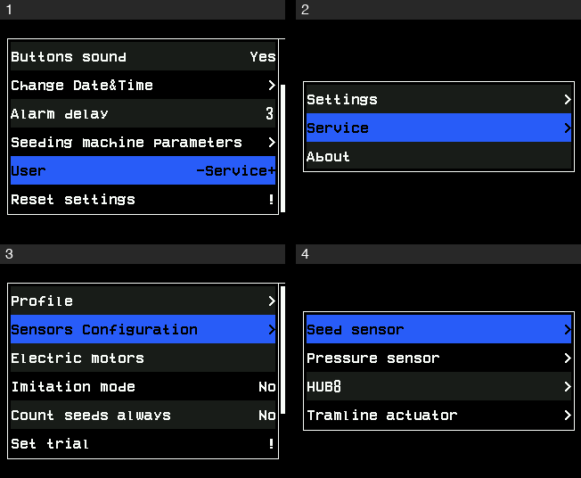
The way to the sensor configuration: Settings, the main menu, the Service menu, the Sensors Configuration menu.
| Item | Level | How |
|---|---|---|
| “Seed sensor” | Agronomist | Configure a seed sensor |
| “Pressure sensor” | Agronomist | Configure a pressure sensor |
| “HUB8” | Service | Configure a HUB-8 concentrator |
| “Tramline actuator” | Service | For the service engineer only. |
The rules of every configuration
- One device on the harness. With “Sensor address” at “AUTO” the panel takes the one device it finds. If more than one answers, it refuses with “More than one device in network!”; if none answers, it shows “No connection”.
- The new address must be free. When the device was picked by its present address instead of “AUTO”, the panel also checks the new one: if another device already uses it, it shows “Address: … is used!” with the number, and changes nothing.
- Any other refusal reads “Error #” with a number. Disconnect and connect the device, and try again.
- Check the result: disconnect the device, connect it again, and return to the home screen with “BACK”. The device must appear in its place, without a red cross.
Configure a seed sensor
Give a new or replaced seed sensor of the Hectare Mini the number of its row — how to hold an open sensor, the three menu items, and the check afterwards.
For a seed sensor the new address is the number of its row — the number shown under its column on the home screen. Prepare first as in Device configuration: only this sensor on the harness, “Agronomist” level, “Sensors Configuration” menu open.
The address of a seed sensor can be changed only while the sensor works normally. A tube sensor is ready as soon as it is connected. An open sensor must sit on its coulter, or be held so that no direct light falls into the optical channel — the gap between the two glasses. In direct light the sensor reports a fault and does not take the new address.

In “Sensors Configuration” select “Seed sensor” and press “MENU”. The menu has three items: “Sensor address”, “New address” and “Set”.
Leave “Sensor address” at “AUTO”. If it shows something else, set it back with “PLUS” / “MINUS”.
Select “New address” and set the row number with “PLUS” / “MINUS”.
Select “Set” and press “MENU”. The panel answers “Done” and the address it found the sensor on.
Disconnect the sensor and connect it again. Return to the home screen with “BACK” (twice from the “Service” menu). The sensor must appear under its row; the rows not plugged in show a red cross.

The home screen after re-addressing, with only one sensor on the harness: the other rows and devices crossed out in red.
Repeat for every sensor to be addressed. When all are done, return to “Operator” — set “User” back in “Settings”, or switch the panel off and on — and reconnect all devices.
Searching for a sensor
Hold “MENU” on “Sensor address” to search the network for a seed sensor: the item then shows the present address of the sensor found. Hold “MENU” again to search for the next one. With a found address in place of “AUTO”, “Set” re-addresses exactly that sensor, and the panel checks that the new address is free. If nothing is found, the panel shows “No connection”.
What the error messages mean: The rules of every configuration.
Configure a pressure sensor
Give a new or replaced pressure sensor of the Hectare Mini its address — the three menu items and the check afterwards.
Each pressure sensor of the profile answers on its own address; the first pressure sensor has the first address of the range, the second the next, and so on. “New address” offers only the addresses of that range. Ask the service which one your sensor needs if you are not sure. Prepare first as in Device configuration: only this sensor on the harness, “Agronomist” level, “Sensors Configuration” menu open.
In “Sensors Configuration” select “Pressure sensor” and press “MENU”. The menu has three items: “Sensor address”, “New address” and “Set”.
Leave “Sensor address” at “AUTO”.
Select “New address” and set the address with “PLUS” / “MINUS”. It opens at the first address of the range, the one of pressure sensor 1.
Select “Set” and press “MENU”. The panel answers “Done”.

The Pressure sensor menu (the address is covered in this manual). Disconnect the sensor and connect it again. Return to the home screen with “BACK”. The pressure sensor must report back; while a pressure sensor is missing, its indicator shows a red cross and XXXX.

The home screen while the pressure sensors are not plugged in.
When all devices are done, return to “Operator” — set “User” back in “Settings”, or switch the panel off and on — and reconnect all devices.
Hold “MENU” on “Sensor address” to search for a pressure sensor on the harness, as described for the seed sensor — Searching for a sensor. The error messages: The rules of every configuration.
Configure a HUB-8 concentrator
Set the eight channels of a HUB-8 concentrator on the Hectare Mini — what each channel stands in for, and the shortcuts that fill all channels at once.
A HUB-8 concentrator collects up to eight sensors and stands, on the sensor network, in for each of them: every channel appears to the panel as an input device or as a seed sensor with its own address. The configuration tells each channel what it stands in for and which one it is in its group. It needs the “Service” level. Prepare first as in Device configuration: only the concentrator on the harness, “Sensors Configuration” menu open.
In “Sensors Configuration” select “HUB8” and press “MENU”. The menu shows “Device address”, then for each channel a pair “Channel 1 type” and “Channel 1 address”, up to channel 8, and “Set” at the end.
Leave “Device address” at “AUTO”.
Select “Channel 1 type” and choose with “PLUS” / “MINUS” what the channel stands in for: “Input device” or “Seed sensors”.
Select “Channel 1 address” and set with “PLUS” / “MINUS” which device of its group this channel is — its sequence number among the input devices or among the seed sensors.
Do the same for channels 2 to 8.
Select “Set” and press “MENU”. The panel answers “Done”.
Disconnect the concentrator and connect it again. Return to the home screen with “BACK”. The devices on its channels must report back; while the concentrator is unplugged, they are crossed out in red.

The home screen while the concentrator is unplugged: dispensers, fan and pressure sensors crossed out.
When all devices are done, return to “Operator” — set “User” back in “Settings”, or switch the panel off and on — and reconnect all devices.
Shortcuts
- Hold “MENU” on one of “Channel 1 type” to “Channel 8 type”: all the following channels get the same type, and their addresses are numbered on from this channel.
- Hold “MENU” on one of “Channel 1 address” to “Channel 8 address”: the following channels of the same type are numbered on from this one.
- Hold “MENU” on “Device address”: the panel searches for a concentrator and reads its present channel settings into the menu. Hold it again for the next one.
When you change a channel type, the address of that channel jumps to the first free one of the new type. If two channels of the same type end up with the same address, “Set” refuses with “Invalid profile!”. The other messages: The rules of every configuration.
How alarms work
When the Hectare Mini raises an alarm, what the alarm window shows, how to close it, which messages are not alarm windows, and how the alarm topics of this manual are organised.
An alarm is a window that opens over the working screen, with an alarm signal. It tells you that one device — a sensor, a motor, an actuator — or the system as a whole has found a fault. The alarm topics of this section are grouped by device. Look for the words you see on the screen.
When the panel raises an alarm
A fault is not reported the moment it appears. The condition must hold without a break for the time set in “Alarm delay” before the window opens.
| Setting | Value |
|---|---|
| Where | “Settings” → “Alarm delay”, “Operator” level — The Settings menu |
| Range | 2 to 20 seconds, in steps of 1 second |
| Default | 3 seconds. A stored value outside the range is reset to 3 by itself. |
A short delay reacts fast, but also to a single bump or a short gap in the seed flow. A long delay keeps the screen quiet, but a real fault can run for up to twenty seconds before you hear of it.
Two cases do not follow the delay:
- A lost connection is counted in polls: “Connection lost” appears after three polls in a row without an answer.
- Right after a sensor has received new settings, its alarms are held back for a short time, so that configuring a device does not cause a burst of alarms.
The alarm window
- “FAILURE!” — the red title of every alarm window, whatever the fault.
- “HOME - close message” — the hint how to close it.
- The alarm text — the fault. Look it up under this text in the alarm topics.
- The kind of device, here the fan. The same text can come from different devices; this line tells you which.
- The number of the device, here fan 1. When several devices of one kind report the same fault, they share one window and are listed together, for example #3-5,8.
- “Close” — closes this alarm.
The alarms of the system as a whole — for example about the rate of a product — have no device line.
Closing an alarm
| What you do | What happens |
|---|---|
| Press “HOME”, or touch “Close” | This alarm closes. If more alarms are waiting, the next one opens. The other buttons do nothing in the window. |
| Hold “HOME” | The window closes and the panel returns to the home screen. |
While the window is open, the panel sounds the alarm signal and lights its alarm indicator. Closing a window does not repair the fault, and the same alarm comes back only after the fault has cleared and appeared again. The active alarms of a sensor stay listed on its status screen — The sensor status screen.
Alarms are hidden at the higher access levels
At “Agronomist” and “Service” no alarm windows are shown. They are not lost: when you return to “Operator”, the panel drops the alarms that have cleared and shows the ones that are still true. See Access levels and User is Agronomist.
Not alarm windows
| Message | Where | Topic |
|---|---|---|
| “SLOWER”, “FASTER” | in place of the speed figure | Speed sensor alarms |
| “NOT UNDER CONTROL” | on the seed diagram | Seeding alarms |
The alarm topics
Any device · Speed sensor · Seeding · Seed sensor state · Fan and dispenser shaft · Hopper · Pressure · Engine · Dosing by weight · Access level · Tramline · Dispenser motors
Each alarm has its own heading with the text exactly as on the screen. Under it: what the panel has found, and what to check, in the order a mechanic checks it — the quick checks on the panel first, then the machine, then the sensor itself.
Device does not answer: Connection lost, Wrong device type!
The two alarms every sensor, motor or actuator of the Hectare Mini can raise — no answer from the device, or an answer from the wrong kind of device — and what to check.
Every device on the sensor network can raise these two alarms. The device line of the alarm window tells you which one — see How alarms work.
“Connection lost”
What it means. The device has not answered three polls in a row. The panel no longer knows its state: nothing about it is watched until it answers again. Its indicator shows a red cross or XXXX; its status screen shows “No connection”.
What to check, in this order:
- Was the device recently added to the profile? Then it may not have its address yet — Device configuration.
- The connectors of the device and of the harness: plugged in fully, pins clean and straight, no water inside.
- The cable of the device and the harness: crushed, chafed or torn, especially at hinges and folding points.
- The power supply of the device. It must match the values in the data sheet of the system.
- The profile: does it list a device that the machine does not have? — Check the profile and the connections.
- The device itself: swap it with a device of the same kind that works. If the fault moves with it, the device is faulty.
When several devices of one kind are lost at once, look first at what they share: one input device, one HUB-8 concentrator, one branch of the harness.
“Wrong device type!”
What it means. Something answers on the address of this device, but not the kind of device the profile expects there — for example an input device where a pressure sensor should be.
What to check, in this order:
- The profile: the kind of each device as installed — The profile.
- Was a device replaced or re-addressed recently? Two devices may now share an address, or one has the address meant for another. Address it again — Device configuration.
- On a HUB-8 concentrator: the type of each channel — Configure a HUB-8 concentrator.
If you have to keep working with a device that does not answer, you can take it out of control until it is repaired — Take a sensor into or out of control. It is then not watched at all.
Travel speed: SLOWER, FASTER and speed sensor alarms
What to do when the Hectare Mini shows SLOWER or FASTER, when a speed sensor fails, or when the speed limits cannot be met.
The travel speed outside its limits raises no alarm window. The speed indicator on the home screen shows “SLOWER” or “FASTER” instead of the figure, as long as the speed is wrong — see Indicators. The limits are “Min speed, km/h” and “Max speed, km/h” of the speed sensor (Travel speed sensor); they are watched only while the panel is controlling the seeding.
“SLOWER”
What it means. The machine moves faster than “Max speed, km/h” permits.
What to check, in this order:
- Drive slower.
- The speed on the panel matches the real speed — compare with the tractor or a GPS.
- The settings of the speed sensor: “Pulses”, “Diameter, cm”, “Factor, %”, “Max speed, km/h”.
- Calibrate the speed sensor — Calibrate the speed sensor.
- The speed sensor itself is serviceable.
“FASTER”
What it means. The machine moves slower than “Min speed, km/h” permits.
What to check, in this order:
- Drive faster.
- The speed on the panel matches the real speed.
- The settings of the speed sensor, including “Min speed, km/h”.
- Calibrate the speed sensor.
- The speed sensor itself is serviceable.
While the speed is imitated, the indicator shows “INCREASE IMITATION” or “DECREASE IMITATION” instead: change “Imitation, km/h”.
“Speed sensor #1 failed” / “Speed sensor #2 failed”
What it means. Only with two speed sensors on an input device (“Input device (2)” in the profile): the machine moves, but this sensor has given no pulse for too long.
What to check, in this order:
- The gap between the sensor and its target, and the target itself.
- The connector and cable of the sensor up to the input device.
- The sensor itself — swap the two sensors; if the fault moves, the sensor is faulty.
“Error in settings of Min/Max”
What it means. On a machine whose motors dose by weight: a speed limit set on the speed sensor cannot be met together with the speeds the motors can dose at — the minimum lies at or above the highest dosing speed, or the maximum at or below the lowest.
What to check, in this order:
- The status screen of the speed sensor: it shows the limits in force and writes the impossible one in red — The sensor status screen.
- “Min speed, km/h” and “Max speed, km/h” of the speed sensor.
- The target rates of the products and the speed limits of the motors — Calibrate a motor by weight.
Seeding alarms: rate, skips, doubles, NOT UNDER CONTROL
What to do when a seed or fertilizer line of the Hectare Mini sows too little or too much, has too many skips or doubles, sows into a tramline — or when the panel is not controlling at all.
These alarms come from the seed sensors and the fertilizer sensors. The device line tells you which line — for example Seed sensor: #4. The limits are the settings of the group (Seed and fertilizer sensors). Check the speed first in every case: a wrong travel speed makes every rate per metre wrong.
NOT UNDER CONTROL
What it means. Not an alarm window: the seed diagram shows “NOT UNDER CONTROL”. Seed flows, but not through enough lines to meet the condition for control — fewer than “Percent of sowing,%” of the seed lines sow within the target. Until the condition is met the panel watches no seeding fault.
What to check, in this order:
- The speed on the panel matches the real speed.
- The target rate — in “Flow” the alarm level — on the home screen: is it far above what the machine really sows? — Change the target rate.
- “Fraction” of the seed sensors — too high a value hides small seeds.
- Enough seed in the hoppers.
“Under allowable rate”
What it means. A line sows less than permitted: in “Flow” below the alarm level, in “Hybrid” and “Precise” below the target by more than “Rate error,%”.
What to check, in this order:
- The speed on the panel matches the real speed.
- Enough seed in the hoppers.
- The metering unit works and is set right.
- “Fraction” of the sensors — it may have to be lowered.
- The sensor itself — its state on the status screen (The sensor status screen).
“Over allowable rate”
What it means. A line sows more than the target plus “Rate error,%”. Only in “Hybrid” and “Precise”.
What to check, in this order:
- The speed on the panel matches the real speed.
- The metering unit works and is set right.
- “Fraction” of the sensors — it may have to be raised.
- The sensor itself — its state on the status screen.
“High % of doubles”
What it means. The share of doubles over the last stretch is above “Doubles error,%”. Only in “Precise”, and only if that setting is not “No”.
What to check, in this order:
- The speed on the panel matches the real speed.
- “Doubles error,%” of the seed sensors.
- The metering unit: vacuum, singulator, disk for the seed.
- “Fraction” — it may have to be raised.
- The sensor itself — its state on the status screen.
“High % of skips”
What it means. The share of skips over the last stretch is above “Skips error,%”. Only in “Precise”, and only if that setting is not “No”.
What to check, in this order:
- The speed on the panel matches the real speed.
- “Skips error,%” of the seed sensors.
- Enough seed in the hoppers.
- The metering unit: vacuum, singulator, disk for the seed.
- “Fraction” — it may have to be lowered.
- The sensor itself — its state on the status screen.
“Seeding to tramline”
What it means. A line that should be shut off — in a tramline bout, or with “Product application” at “No” — passes more seed than “Toler.sowing to tramline,%” of the target rate.
What to check, in this order:
- The tramline actuator of that line shuts off — see Tramline alarms.
- The setting “Relation of sensors to actuators” — the right lines assigned to the actuator (Seeding machine parameters).
- “Toler.sowing to tramline,%”.
“Old firmware! Wrong S&D calc!”
What it means. A fertilizer sensor running in “Precise” has firmware too old to count skips and doubles correctly.
What to check: run the fertilizer sensors in “Flow” or “Hybrid”, or have the sensor replaced or updated by the service.
Seed sensor state: Clogged, Light struck, Broken
What to do when a seed or fertilizer sensor of the Hectare Mini reports that its optical channel is blocked, that it is blinded by sunlight, or that it has failed.
These three alarms are reported by the seed or fertilizer sensor itself about its own state. The device line names the sensor. Its status screen shows the same state in the line Status: — The sensor status screen.
“Clogged”
What it means. Something blocks the optical channel of the sensor. The coulter or the seed tube may be blocked.
What to check, in this order:
- The coulter and the seed tube: soil, a stone, wet seed.
- The optical channel of the sensor: remove the blockage, clean off dust.
- The power supply of the sensor — it must match the values in the data sheet of the system.
“Light struck”
What it means. Too much light falls into the optical channel; the sensor cannot count. The panel reports it only while the machine moves (or always, without a speed sensor) — a raised implement at the headland does not cause it.
What to check: keep direct sunlight out of the optical channel — the seat of an open sensor on its coulter, the covers, the position of the sensor.
“Broken”
What it means. The sensor has detected a fault in itself. On its status screen it reads “Faulty”. The sensor may have to be replaced.
What to check, in this order:
- The power supply of the sensor — it must match the values in the data sheet of the system.
- Disconnect and connect the sensor.
- If it stays “Faulty”, replace the sensor. A new seed sensor needs the number of its row — Configure a seed sensor.
Fan or dispenser shaft: speed alarms
What to do when the fan or a dispenser shaft of the Hectare Mini turns too slowly, too fast, or not at all.
The fan sensor and the dispenser shaft sensor use the same two messages. The device line of the alarm window tells you which one — Fan or Dispenser, with its number. How the window works: How alarms work.
“Low speed of rotation”
What it means. The fan turns slower than “Minimum, rpm”, or the dispenser shaft slower than the travel speed demands, by more than “Maximum error, %”.
What to check, in this order:
- Dispenser only: the speed on the panel matches the real speed.
- The component being watched — the fan and its drive, or the dispenser and its drive.
- The settings of the sensor: for the fan “Minimum, rpm” and “Pulses” — Fan sensor; for the dispenser “Maximum error, %” — Dispenser shaft sensor.
- The sensor itself is serviceable.
- Dispenser only: calibrate the rotation again — Calibrate the dispenser rotation.
“High speed of rotation”
What it means. The fan turns faster than “Maximum, rpm” — this is watched also when the machine stands — or the dispenser shaft faster than the travel speed demands, by more than “Maximum error, %”.
What to check, in this order:
- Dispenser only: the speed on the panel matches the real speed.
- The component being watched — the fan and its drive, or the dispenser and its drive.
- The settings of the sensor: for the fan “Maximum, rpm” and “Pulses”; for the dispenser “Maximum error, %”.
- The sensor itself is serviceable.
- Dispenser only: calibrate the rotation again.
The dispenser shaft speed is watched only with “Rotation speed control” at “Yes”, and only while the machine moves.
“No rotation”
What it means. The dispenser shaft gives no pulse for longer than “Period, s” while the machine sows or moves. Only the dispenser shaft sensor raises this alarm.
What to check, in this order:
- The dispenser and its drive — chain, clutch, shear pin.
- “Period, s” of the sensor: long enough for the slowest shaft speed at work — Dispenser shaft sensor.
- The gap between the sensor and its target, and the sensor itself.
Hopper empty
What to do when the Hectare Mini reports that a hopper is empty.
The hopper level sensor sits at a fixed height in the hopper. The device line names the hopper: Hopper: #2. On the home screen the hopper indicator turns red — see Indicators.
“Hopper empty”
What it means. The product in the hopper has fallen below the height of the sensor.
What to check, in this order:
- Fill the hopper.
- If the product is above the sensor and the alarm stays: product bridging or caked on the sensor — clean the sensor.
- The status screen of the sensor: Pin: reads "1" while the panel sees the hopper empty — Hopper and work position sensors.
- The sensor itself is serviceable.
The hopper sensor has no settings; an alarm that does not match the hopper is a matter of the sensor, its mounting height or its cable.
Pressure alarms: High pressure, Low pressure
What to do when the vacuum measured by a pressure sensor of the Hectare Mini is too high or too low.
The panel compares the absolute value of the measured pressure with “Minimum, Pa” and “Maximum, Pa” of the sensor (Pressure sensor), while the machine sows or moves in the working position. The device line names the sensor: Pressure sensor: #1.
“High pressure”
What it means. The measured pressure is above “Maximum, Pa” — too much vacuum.
What to check, in this order:
- Lower the speed of the fan or turbine.
- The damper of the air intake, if the machine has one.
- The tube to the pressure sensor: connected at the right point, not kinked, not blocked.
- “Maximum, Pa” of the sensor.
“Low pressure”
What it means. The measured pressure is below “Minimum, Pa” — too little vacuum.
What to check, in this order:
- Raise the speed of the fan or turbine.
- The damper of the air intake, if the machine has one.
- The air ducts and meters for leaks — hoses, seals, covers.
- The tube to the pressure sensor: connected at the right point, not kinked, not blocked.
- “Minimum, Pa” of the sensor.
The measured pressure is on the status screen of the sensor, P= in kPa — compare it with the limits, which are set in Pa (1 kPa = 1000 Pa).
Engine alarms: oil pressure, battery charge, fuel, air filter
What to do when a sensor of the separate fan-drive engine of the Hectare Mini reports low oil pressure, no battery charge, low fuel or a dirty air filter.
The sensors of a separate fan-drive engine all raise the same alarm text, “FAILURE”. The device line names the sensor — that line is what you look up here. The settings of these sensors: Engine sensors of the fan drive.
The ignition sensor raises no alarm. It keeps the oil pressure and battery charge alarms quiet while the ignition is off.
“Emergency oil pressure”
What it means. The low oil pressure sensor of the engine has triggered — with the ignition on, if there is an ignition sensor.
What to check, in this order:
- Stop the engine and check the oil level and the oil pressure.
- The oil pressure sensor is serviceable.
- “Activation signal” of the oil pressure sensor: compare Pin: on its status screen with the real state.
- If the alarm comes with the engine off: is the ignition sensor in the profile and under control? Is it serviceable?
“No battery charge”
What it means. The battery is not being charged by the engine — with the ignition on, if there is an ignition sensor.
What to check, in this order:
- The alternator, its belt and the charging circuit of the engine.
- The battery charge sensor is serviceable.
- “Activation signal” of the battery charge sensor.
- If the alarm comes with the engine off: is the ignition sensor in the profile and under control? Is it serviceable?
“Low fuel”
What it means. Little fuel is left in the tank of the engine.
What to check, in this order:
- Refuel.
- The fuel level sensor is serviceable.
- “Activation signal” of the fuel level sensor.
- “Signal delay, sec” — fuel slopping in the tank on rough ground can trigger it; the default is 15 seconds.
“Air filter”
What it means. The air filter of the engine is dirty.
What to check, in this order:
- Clean or replace the air filter.
- The air filter sensor is serviceable.
- “Activation signal” of the air filter sensor.
- “Signal delay, sec” — the default is 5 seconds.
Dosing by weight: product rate too low or too high
What to do when the Hectare Mini reports that a product dosed by weight is applied below or above its target rate, or cannot be dosed at all.
These are alarms of the system as a whole: the window has no device line. They come only when a product is followed by weight — by a dispenser shaft sensor with “Weight control” at “Yes”, or by dispenser motors. The number in the text is the number of the product, “Product 1” to “Product 3”.
“Rate of Product 1 is to low!” / “Rate of Product 1 is to high!”
What it means. The weight of the product applied per hectare deviates from its target rate by more than “Product rate error,%” of the “Settings” menu (The Settings menu).
What to check, in this order:
- The target rate of the product — Change the target rate.
- The metering unit: roller, variator or gearbox setting, product flow from the hopper.
- The settings of the dispenser shaft sensor that applies this product, and its “Type of product” — Dispenser shaft sensor.
- The dispenser shaft sensor is serviceable.
- Calibrate by weight again — Calibrate the dispenser by weight, or for motors Calibrate a motor by weight. A new roller, another setting of the drive or another seed always need a new calibration.
“Product dosage is impossible! Check product rate and calibration!”
What it means. On a machine with dispenser motors: with the present target rates and calibrations no travel speed exists at which the motors could apply all products. The panel shows it again each time the seeding starts.
What to check, in this order:
- The target rates of the products.
- The calibration of the motors and their shaft speed limits — Calibrate a motor by weight.
User is Agronomist! Alarms will not be shown!
The one window the Hectare Mini still shows at the Agronomist or Service level when seeding starts — what it means and how to get the alarms back.
At the “Agronomist” and “Service” levels the panel shows no alarm windows (Access levels). This one is the exception.
“User is Agronomist! Alarms will not be shown!”
What it means. The panel sees seeding while the access level is “Agronomist” or “Service”. It warns you once that no seeding faults will be reported. The message comes only once for the whole time the higher level stays set; it comes again after you have gone down to “Operator” and up again.
What to do: set the level back to “Operator” before you work — in “Settings” set “User” to “Operator” and press “MENU”, or switch the panel off and on. The alarms that are still true are then shown one after another.
Tramline alarms: Illegal state, Stall
What to do when a tramline actuator of the Hectare Mini reports both end positions at once, does not reach its position, or when seed passes a line shut off for a tramline.
A tramline actuator shuts off the seed lines of the tramline on the bouts the rhythm asks for (Next tramline bout). The device line names it: Tramline actuator: #1.
“Illegal state”
What it means. The actuator reports both end positions at the same time — pulled in and pulled out. Its end position switches contradict each other.
What to check, in this order:
- The end position switches of the actuator and their wiring.
- Dirt or ice holding a switch.
- The actuator itself.
“Stall”
What it means. The actuator was told to move but has not reached the position asked for.
What to check, in this order:
- The shutter: blocked by seed, dirt or a bent part.
- The power supply of the actuator.
- The end position switch of the position asked for.
- The actuator itself.
On its status screen the actuator shows Status: “Pulled in”, “Pulled out”, “Working” while it moves, or “Unknown” — The sensor status screen.
“Seeding to tramline”
Raised by the seed sensor of a line that should be shut off. See Seeding alarms.
Dispenser motor alarms
What the alarms of an electric dispenser motor of the Hectare Mini mean — voltage, temperature, short circuit, current, jamming — and what to check.
The controller of each electric dispenser motor reports its faults to the panel. The device line names the motor: Electric motor: #5. The code of the last fault is on the status screen of the motor, line Last fault: — give it to the service. The motor and its settings: The context menu of a motor.
| Alarm text | What it means | What to check, in this order |
|---|---|---|
| “Under voltage” | The supply voltage of the motor controller — for the motor or for its electronics — is too low. | Battery and alternator of the tractor; the power cable and its connectors; the fuse. |
| “Over voltage” | The supply voltage is too high. | The charging voltage of the tractor; the power supply of the system against the data sheet. |
| “Over temperature” | The controller or its heat sink is too hot. | Let it cool; a dispenser that runs hard; dirt covering the motor. |
| “Short circuit” | A short on the motor leads — between them, to ground or to the supply. | The motor cable and connector; the motor. |
| “Over current” | The motor draws too much current. | A dispenser that runs hard or is blocked; the motor. |
| “Motor jammed!” | The motor is told to turn but does not turn. With “Rollback when jammed” at “Yes” it first runs back briefly to free itself. | Foreign matter in the dispenser; the drive between motor and dispenser; the motor. |
| “Device in bootloader!” | The motor controller is in its update mode and does not run. | Switch the panel and the system off and on. If it stays, call the service. |
| “FAILURE” | Any other fault of the controller. | Note Last fault: from the status screen and call the service. |
All motors share one more alarm with every device: “Connection lost” — Device does not answer.
The context menu of a dispenser motor
Every item of the context menu of a dispenser electric motor — what it sets, from which access level it is visible, and what "Reset to defaults" really resets.
On the Motors screen, hold “MENU”, select the motor with “UP” / “DOWN” and press “MENU”. What the menu holds depends on the access level and on the seeding mode of the motor.

| Item | Level | What it does |
|---|---|---|
| “Information” | Agronomist | Opens the status screen of the motor. |
| “Electric motors” | Service | Opens the service screen of the motors — see The Motors screen. |
| “Dispenser calibration(weight)” | Operator | Starts the calibration by weight. Shown only while the machine stands still. |
| “Type of product” | Agronomist | Which of the three products the motor applies — Assign a product to a motor. |
| “Weight, gr” and “Rotations” | Agronomist | Together they describe the dispenser: this weight of product for this number of shaft turns. Set by the calibration; change them by hand only to copy the values of an identical dispenser. |
| “Minimum, rpm”, “Maximum, rpm” | Agronomist | The permitted shaft speeds. From them the panel works out the travel speeds at which the rate can be applied. The minimum cannot reach the maximum: the panel moves the other value by one step. |
| “Button input”, “Activation signal” | Agronomist | A push-button on the motor controller to run the motor from the machine during calibration. With “Button input” at “No”, calibration is run from the panel only. |
| “Holes in disk” | Operator | The number of cells in the seed disk; from it the panel works out the disk speed. Only in the “Precise” mode. |
| “Numerator”, “Denominator” | Agronomist | The gear ratio between motor and driven shaft, as the machine builder set it. Change it only after the drive has been rebuilt. |
| “Rotation direction” | Agronomist | “Forward” or “Backward”, as the motor is fitted. |
| “Rollback when jammed” | Agronomist | “Yes”: when the dispenser jams, the motor runs back briefly to free it. “No”: the motor is only stopped. |
| “Reset to defaults” | Service | Resets this motor's own settings — see the caution below. |
Further items at the Service level are tools of the service engineer and are not described here.
Weight items only in “Flow” and “Hybrid”. “Dispenser calibration(weight)”, “Type of product”, “Weight, gr”, “Rotations”, the speed limits and the button items appear only if the motor works in “Flow” or “Hybrid”. In “Precise” the rate comes from the seed sensors, there is nothing to calibrate by weight, and “Holes in disk” appears instead.
Taking the motor into or out of control is not in this menu: “PLUS” and “MINUS” on the Motors screen do that.
Buttons on every screen
What each of the seven buttons does with a short and a long press — and where the screen takes touches — on the home screen, in menus, in windows and on every working screen.
The seven buttons are touch areas on the frame: a short press is a short touch; a long press is a touch held for about half a second. Holding a button never repeats it — one touch, one step. Where the buttons are: The panel and its seven buttons.
Home screen — monitoring
| Button | What it does |
|---|---|
| “HOME” | Seeding table. |
| “HOME”, long | Locks or unlocks product application (machines with dispenser motors or a liquid pump). One short beep. |
| “MENU” | Main menu. |
| “MENU”, long | Sensor setup mode. |
| “PLUS” / “MINUS” | First press selects a rate field (it blinks); the next ones raise or lower its set value. |
| “UP” / “DOWN” | Previous / next rate field. Nothing if there is only one. |
| “BACK” | Releases a blinking rate field; otherwise opens the tramline bout menu, if the tramline is on. |
| “BACK”, long | While seeding: sets the alarm level from the flow applied — Set the alarm level. |
Home screen — sensor setup mode
| Button | What it does |
|---|---|
| “UP” / “DOWN” | Previous / next device. |
| “PLUS” / “MINUS” | Takes the selected sensor into / out of control, after a question the first time. |
| “MENU” | Context menu of the selected device. |
| “BACK” | Leaves the mode. |
| “HOME” | Leaves the mode and goes to the Seeding table. |
Seeding table
| Button | What it does |
|---|---|
| “PLUS” / “MINUS” | Next / previous table. |
| “UP” / “DOWN” | Scroll one row. |
| “MENU” | Asks “Zero readings?”. |
| “HOME” / “BACK” | Statistics / home screen. |
Statistics
| Button | Touch | What it does |
|---|---|---|
| “UP” / “DOWN” | Swipe down / up | Scroll one line. |
| “PLUS” / “MINUS” | Two-finger swipe right / left | Next / previous field. |
| “MENU” | Two-finger tap | Menu of the screen. |
| “HOME” | Long swipe left | Motors, or the rate control screen. |
| “BACK” | — | Home screen. |
Motors
| Button | What it does |
|---|---|
| “MENU”, long | Switches on the selection. |
| “UP” / “DOWN” | Previous / next motor or actuator. |
| “PLUS” / “MINUS” | Into / out of control, after a question the first time. |
| “MENU” | Context menu of the selected motor. |
| “BACK” | Leaves the selection; then the home screen. |
| “HOME” | Rate control screen. |
Rate control
| Button | What it does |
|---|---|
| “HOME” | Home screen. |
| “HOME”, long | Locks or unlocks product application. |
| “PLUS” / “MINUS” | Rate change state; then change the selected target. |
| “MENU”, long | Sensor setup state. |
| “UP” / “DOWN” | Previous / next element in either state. |
| “MENU” | Context menu of the selected element; on a product, its motors. |
| “BACK” | Leaves the state. Does not leave the screen. |
| Touch and hold | On the settings symbol: main menu. On a product: its motors. On liquid fertilizer: the pump. |
Menus
| Button or touch | What it does |
|---|---|
| “UP” / “DOWN” | Move the selection; at the end it jumps to the other end. |
| “PLUS” / “MINUS” | Change the value of the selected item by one step. |
| “MENU” | Enters the item; on a value between -[ and ]+, opens the number pad. |
| “BACK” | One level up. |
| Touch an item | Selects it; a second touch enters it. |
Number pad
Touch the digits. “OK” or “MENU” accepts; “BACK” cancels. Touch and hold the backspace to clear the number. Nothing else works. See The number pad.
Windows
| Window | Buttons |
|---|---|
| Question | The two buttons named in the window, or touch “Yes” / “No”. “BACK” or a touch outside cancels. |
| Information | Closes by itself, with a touch or with a button. |
| Alarm | “HOME” or touch “Close” — closes. “HOME”, long — closes and returns to the home screen. Other buttons do nothing. |
| Fill the disks | Only “BACK”: aborts, or closes when done. |
Terms used in this manual
The words of the Hectare Mini manual in one place — from active field and alarm level to singulation, spacing and tramline rhythm.
| Term | Meaning |
|---|---|
| Active field | The field the panel writes its statistics to now, marked (A). Start a new field |
| Alarm level | In the “Flow” mode: the flow in seeds per second under which a line counts as failing. Drawn as the control line. Set the alarm level |
| Bout | One pass of the drill across the field. Set up the tramline rhythm |
| Context menu | The menu of one device, opened in the sensor setup mode. Interface basics |
| Control line | The white line across a diagram: the alarm level or the target rate drawn. |
| Doubles | Two seeds where one was intended, as a share. |
| Flow, Hybrid, Precise | The three control modes of a diagram. Flow: seeds per second against an alarm level. Hybrid: seeds per metre against a target rate. Precise: seeds per metre with skips, doubles and quality. The section diagram |
| In control / out of control | Whether the panel watches a sensor. A sensor out of control raises no alarms. Take a sensor into or out of control |
| Lock (work pause) | Product application stopped by hand: motors and pump stand still. Lock application by hand |
| Population | Seeds per hectare, shown in thousands (ks/Ha). Derived from the rate, the working width and the number of rows. |
| Product | A material applied by weight, in kg/ha. Up to three: “Product 1” to “Product 3”. |
| Profile | The list of the devices of the machine, set at commissioning. The profile |
| Quality (singulation) | The share of seeds placed singly, as intended — what is left after doubles and skips. |
| Rate field | The figures beside a diagram: measured on top, set value below. |
| Recalculation interval | The stretch of path (or time without a speed sensor) over which skips, doubles, quality and rate are collected before they are shown anew. Set by “Recalculation,m”. A short interval answers quickly but fluctuates; a long one is steadier. |
| Rhythm | The number of bouts and which device shuts off on which bout. |
| Section, line | One seed or fertilizer line with its own sensor: one column of the diagram. |
| Sensor setup mode | The mode in which one device is selected to be switched or set. Hold “MENU”. |
| Skips | A gap where a seed was intended, as a share. Not sown counts the skips over stretches where nothing was sown at all. |
| Spacing | The distance between seeds — the rate per metre turned round. |
| Target rate | What you set: seeds per metre (“Hybrid”, “Precise”), kg/ha (products), L/ha (liquid). The population target follows from it and is not meant to be changed during the field. |
| Tramline | The lane left unsown for the sprayer. Next tramline bout |
| Unknown area | Area driven while a sensor had no connection or was out of control. |